Chapitre 1
Représentations surfaciques : polyèdres et quadriques
Comment décrire la surface d'un objet ? Soit par une équation (surface continue), soit par un ensemble fini de faces (polyèdre). Ce chapitre montre comment passer de l'une à l'autre pour les quadriques usuelles.
Représentation surfacique
Dans une représentation surfacique, un modèle est entièrement défini par sa surface extérieure : on ne décrit pas la matière à l'intérieur, seulement l'enveloppe qui la sépare de l'extérieur. C'est la représentation la plus courante en synthèse d'images.
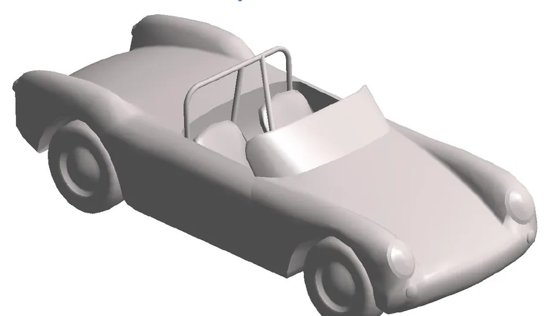
Rappels de trigonométrie
Triangle rectangle
Soit ABC un triangle rectangle en A ; [BC] est l'hypoténuse. Le théorème de Pythagore donne \(BC^2 = AB^2 + AC^2\), et pour l'angle \(\widehat{ABC}\) :
Valeurs remarquables
| \(\theta\) | \(0\) | \(\pi/6\) | \(\pi/3\) | \(\pi/2\) | \(\pi\) | \(-\pi/2\) |
|---|---|---|---|---|---|---|
| \(\cos\theta\) | 1 | \(\sqrt3/2\) | \(1/2\) | 0 | −1 | 0 |
| \(\sin\theta\) | 0 | \(1/2\) | \(\sqrt3/2\) | 1 | 0 | −1 |
Coordonnées sphériques
Soit M(x, y, z) un point de l'espace, O l'origine et P(x, y, 0) la projection orthogonale de M sur le plan xOy. On note :
- \(r = OM\), la distance de M à l'origine ;
- \(\varphi \in [0, \pi]\), l'angle entre l'axe Z et le vecteur \(\vec{OM}\) ;
- \(\theta \in [0, 2\pi[\), l'angle entre l'axe X et le vecteur \(\vec{OP}\).
Le triplet \((r, \theta, \varphi)\) forme les coordonnées sphériques de M. Comme \(z = r\cos\varphi\) et \(OP = r\sin\varphi\), on obtient :
Polyèdre ou surface continue ?
Un polyèdre décrit une surface de manière finie :
- un ensemble de points de \(\mathbb{R}^3\), les sommets du polyèdre ;
- un ensemble de faces, chacune définie par une suite ordonnée de sommets.
Exemple du cube de côté 10 centré à l'origine :
Sommets : S0(-5,-5,-5) S1(-5,-5,5) S2(-5,5,-5) S3(5,-5,-5)
S4(5,5,-5) S5(5,-5,5) S6(-5,5,5) S7(5,5,5)
Faces : F0(S0,S1,S5,S3) F1(S5,S7,S4,S3) F2(S7,S4,S2,S6)
F3(S6,S2,S0,S1) F4(S1,S5,S7,S6) F5(S0,S3,S4,S2)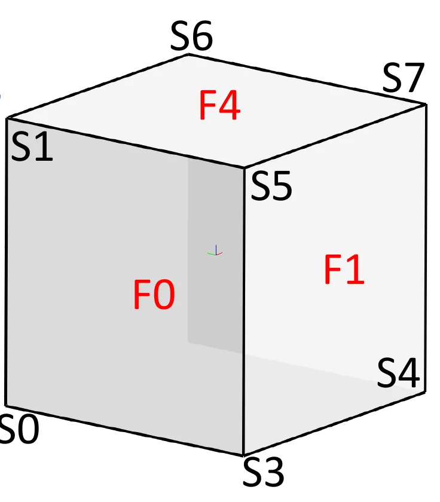
Une surface continue est au contraire décrite par une équation. La sphère de centre \(C(x_c, y_c, z_c)\) et de rayon \(r\) est l'ensemble des points vérifiant :
On peut alors obtenir autant de points que l'on veut, n'importe où sur la surface — ce que le polyèdre ne permet pas : sa précision est figée par le nombre de faces.
Les quadriques
Les quadriques regroupent les cylindres, cônes, sphères, ellipsoïdes, paraboloïdes et hyperboloïdes. Ce sont les surfaces d'équation implicite \(F(x, y, z) = 0\) de degré 2 :
Pour la sphère, en développant \(x^2 - 2x x_c + y^2 - 2y y_c + z^2 - 2z z_c + x_c^2 + y_c^2 + z_c^2 - r^2 = 0\), on identifie :
Cylindre
Le cylindre de révolution d'axe D et de rayon r est l'ensemble des points de \(\mathbb{R}^3\) situés à la distance r de la droite D. Lorsque l'axe est Oz, son équation est \(x^2 + y^2 = r^2\) ; une hauteur h > 0 le limite entre les plans \(z = -h/2\) et \(z = h/2\).
Les méridiens du cylindre sont les segments de longueur h tracés sur son corps, parallèles à l'axe.
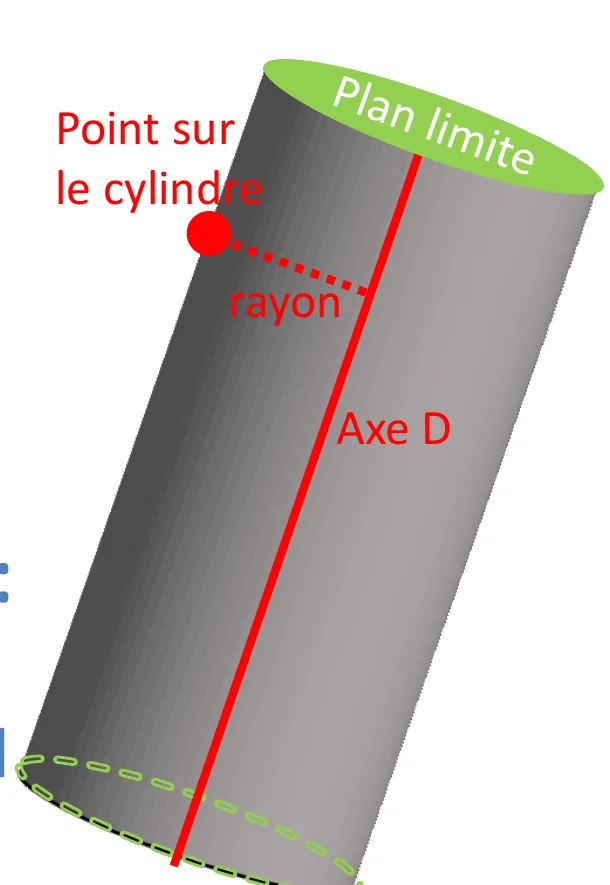
Facettisation. On choisit m méridiens régulièrement répartis, d'angles \(\theta_i = 2\pi i / m\) pour \(i = 0, \dots, m-1\). Chaque méridien \(M_i\) fournit deux sommets :
- Corps : pour \(i = 0, \dots, m-1\), la facette i est le rectangle \((P_i, P'_i, P'_{i+1}, P_{i+1})\), les indices étant pris modulo m (le dernier rectangle se referme sur \(P_0\)).
- Face du bas : \((P_0, P_1, \dots, P_{m-1})\).
- Face du haut : \((P'_{m-1}, \dots, P'_1, P'_0)\), dans l'ordre inverse pour que sa normale pointe vers l'extérieur.
Les sommets sont partagés entre le corps et les couvercles : on les crée une seule fois.
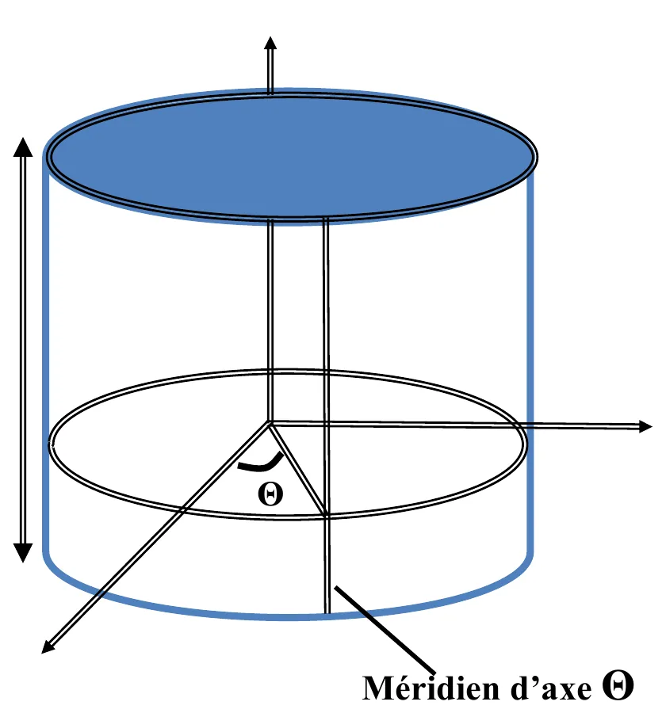
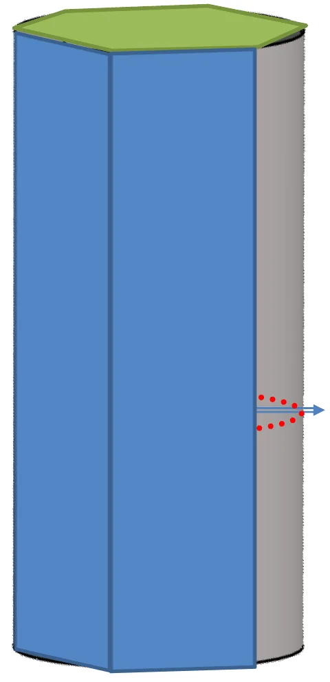
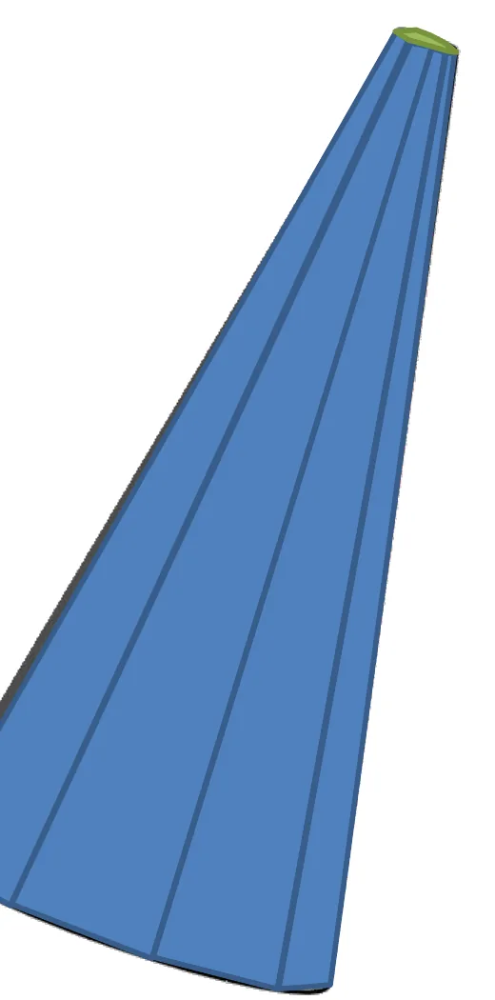
Cône
Un cône est formé de droites passant toutes par un même point, le sommet, et s'appuyant sur une courbe, la base. Pour un cône de révolution, la base est un cercle. Avec un sommet \(S(0, 0, z_s)\) et une base de rayon r centrée en O dans le plan xOy :
La facettisation reprend celle du cylindre : 2m sommets construits de la même façon (le cercle du haut a simplement un rayon plus petit, voire nul pour un cône non tronqué), des faces trapézoïdales entre méridiens et deux faces pour les plans limites.
Sphère
La sphère de centre O et de rayon r est l'ensemble des points \(M = (x_m, y_m, z_m)\) tels que \(x_m^2 + y_m^2 + z_m^2 = r^2\), soit en coordonnées sphériques les points \((r, \theta_m, \varphi_m)\).
- Un méridien d'angle \(\theta_i \in [0, 2\pi[\) est le demi-cercle des points tels que \(\theta_m = \theta_i\).
- Un parallèle d'angle \(\varphi_i \in\ ]0, \pi[\) est le cercle des points tels que \(\varphi_m = \varphi_i\).
Facettisation. On découpe la sphère en m méridiens et p parallèles (\(m \ge 3\), \(p \ge 1\)), auxquels s'ajoutent le pôle nord \(N = (0, 0, r)\) et le pôle sud \(S = (0, 0, -r)\). On obtient \(m \cdot p + 2\) sommets : des faces à 4 sommets entre deux parallèles consécutifs, et des faces à 3 sommets (triangles) autour de chaque pôle.
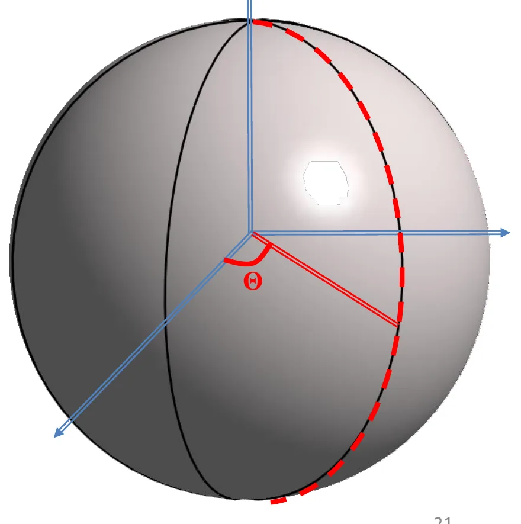
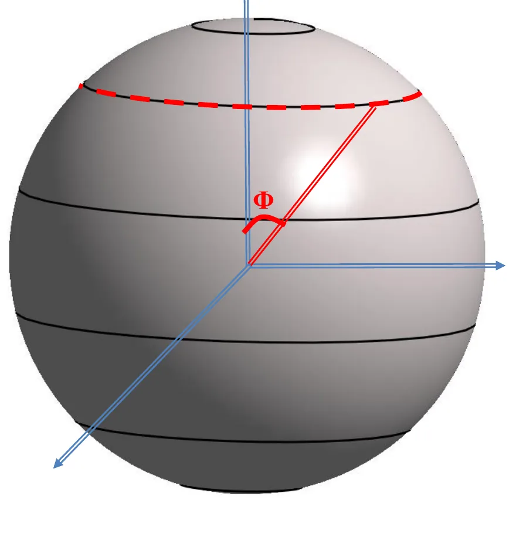
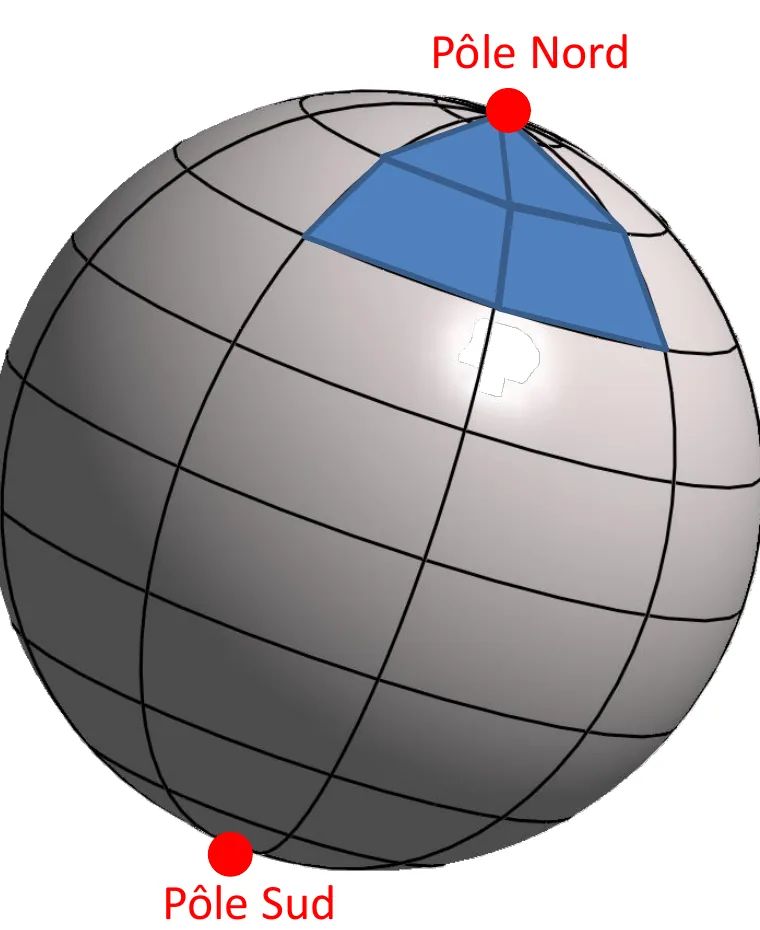
Conclusion
Une surface se représente soit de manière continue (par une équation), soit de manière polyédrique. À partir de l'équation, on peut construire une facettisation, et l'équation sous-jacente permet de faire varier la résolution du modèle facetté.
TP 1 — Polyèdres et quadriques
Les objets sont construits en facettes triangulaires dans l'environnement de votre choix (Unity, OpenGL…).
Exercice 0 — Plan
Tracez un triangle, puis un second pour obtenir un rectangle. Pour aller plus loin, générez un plan découpé en nbLignes × nbColonnes cellules, chacune formée de deux triangles.
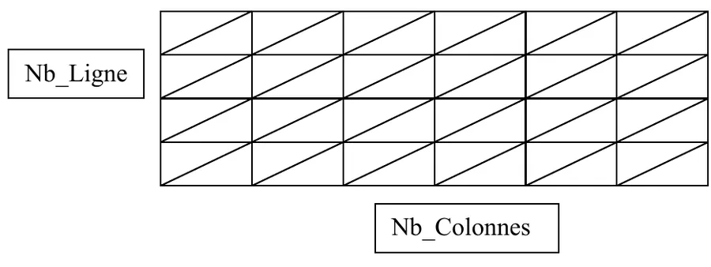
Exercice 1 — Cylindre
Écrivez une méthode Cylindre(rayon, hauteur, nbMeridiens) qui construit un cylindre fermé par deux « couvercles ». Soignez la liaison entre les couvercles et le corps.
Exercice 2 — Sphère
Écrivez une méthode Sphere(rayon, nbParalleles, nbMeridiens). Attention au traitement des pôles nord et sud.
Exercice 3 (optionnel) — Cône, tronqué ou non
Paramètres : rayon, hauteur, et hauteur à laquelle le cône est tronqué.
Exercice 4 (optionnel) — Objets tronqués
Reprenez les exercices précédents pour produire des objets tronqués, par exemple une sphère dont on retire un quartier. Pensez à bien refermer les objets.
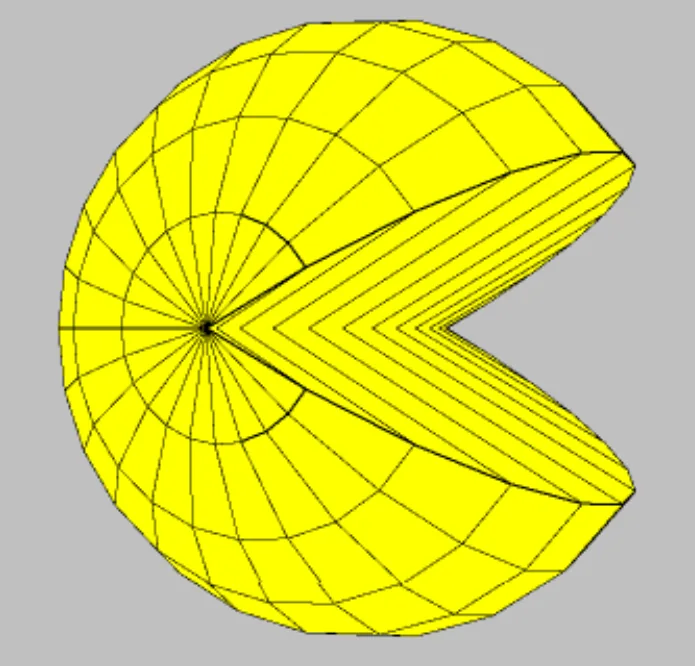
Chapitre 2
Maillages
Le maillage est la structure standard pour afficher des scènes 3D complexes. Ce chapitre en donne le vocabulaire, les propriétés topologiques (dualité, fermeture, formule d'Euler, normales) et les structures de données pour le stocker.
Pourquoi des maillages ?
- La surface est représentée par un ensemble de polygones, le plus souvent des triangles (le simplexe de dimension 2).
- L'affichage est optimisé par toutes les cartes graphiques.
- La surface est continue (C0) mais pas lisse : elle présente des discontinuités de dérivée aux arêtes.
- Le maillage porte à la fois la géométrie (positions) et la topologie (qui est relié à qui).
- L'équation d'une surface n'est pas toujours disponible, par exemple pour un objet numérisé par scanner.
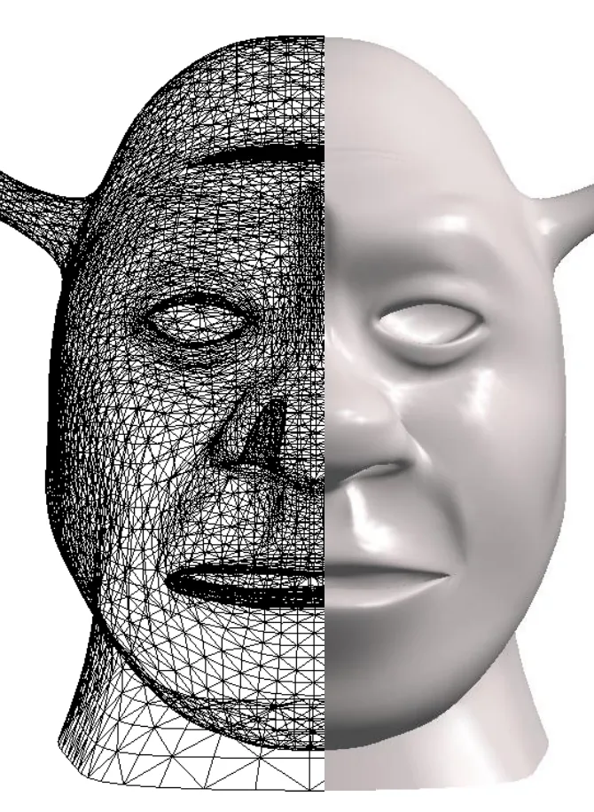
Vocabulaire
- Sommets
- des points (x, y, z).
- Arêtes
- définies par 2 sommets.
- Faces
- définies par n sommets ou n arêtes ; en général des triangles (n = 3).
Propriétés
Dualité
Le maillage dual s'obtient ainsi :
- chaque face est remplacée par un sommet, placé à son barycentre ;
- deux sommets du dual sont reliés par une arête si les faces correspondantes sont voisines dans le maillage d'origine ;
- chaque sommet d'origine devient une face.
Plus généralement, les objets de dimension k (0 : point, 1 : segment, 2 : face) deviennent des objets de dimension 2 − k. Le dual du dual d'un maillage fermé est le maillage d'origine.
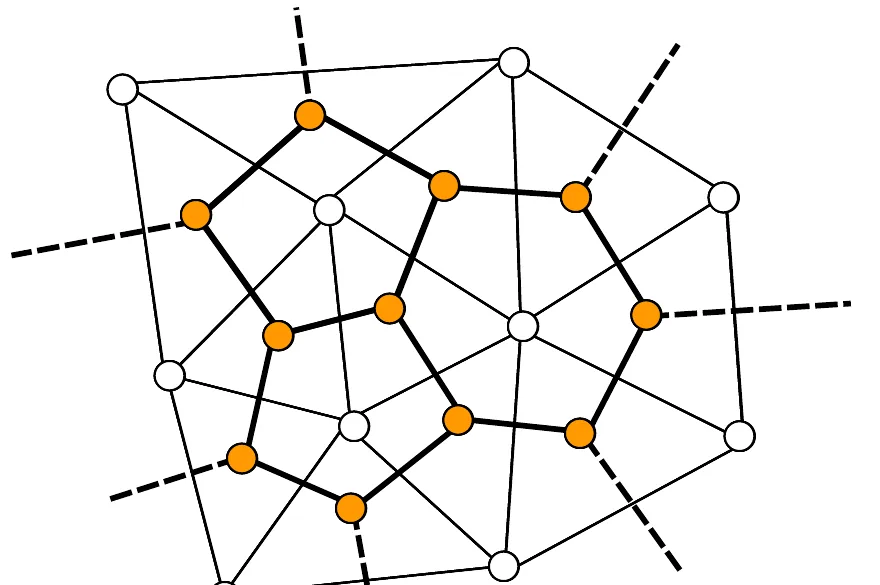
Fermeture
Un maillage est fermé s'il n'a pas de bord : chaque arête est partagée par deux faces (exactement deux pour une surface « variété »). Une arête qui n'appartient qu'à une seule face fait partie d'un bord.
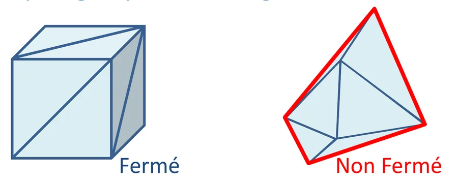
Formule d'Euler
Elle relie le nombre d'entités de chaque type dans un maillage :
S : sommets, A : arêtes, F : faces, C : composantes connexes, G : genre (nombre d'« anses » ou de trous traversants), T : nombre de bords (trous).
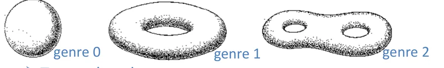
Exemples :
- Sphère (C = 1, G = 0, T = 0) : S − A + F = 2. C'est le cas de tous les polyèdres convexes : tétraèdre 4 − 6 + 4, cube 8 − 12 + 6, octaèdre 6 − 12 + 8, dodécaèdre 20 − 30 + 12, icosaèdre 12 − 30 + 20.
- Tore (C = 1, G = 1, T = 0) : S − A + F = 0.
- Un seul triangle (C = 1, G = 0, T = 1) : 3 − 3 + 1 = 1.
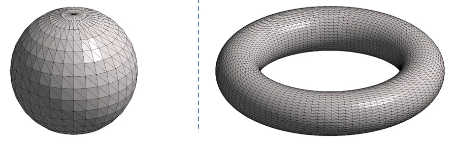
La formule sert de test de cohérence : un maillage chargé qui ne la vérifie pas a des faces manquantes, des sommets dupliqués ou des arêtes mal partagées.
Normales
Normale par face. Elle définit l'orientation de la face, et donc l'extérieur et l'intérieur ; elle sert aussi à l'éclairage. Pour un triangle \((P_1, P_2, P_3)\), c'est le produit vectoriel des deux premières arêtes, normalisé :
L'ordre des sommets compte : inverser deux sommets retourne la normale.
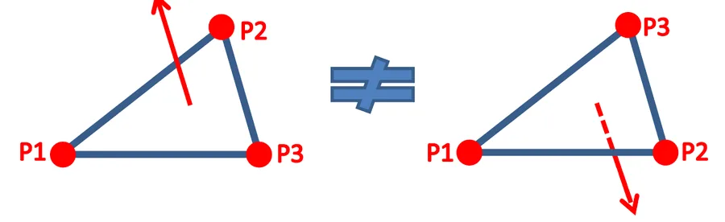
Normale par sommet. On la calcule à partir des normales des faces qui contiennent le sommet : leur moyenne, de préférence pondérée par une propriété du triangle (son aire, ou l'angle au sommet), puis normalisée. Elle permet un éclairage lissé.
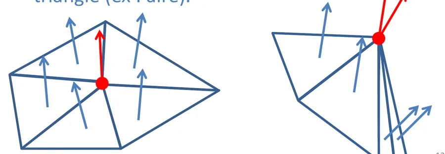
Structures de données
On stocke les entités (sommets, arêtes, faces), les normales (par sommet ou par face), les couleurs ou coordonnées de texture… Il faut arbitrer entre trois objectifs :
- minimiser la mémoire : répéter le moins possible les coordonnées ;
- faciliter le parcours : passer d'un sommet à ses voisins ;
- extraire la topologie : retrouver les sommets liés à un sommet, les arêtes autour d'un sommet, etc.
Exemple commun : un quadrilatère P1 P2 P4 P3 coupé en deux triangles T1 = (P1, P2, P4) et T2 = (P1, P4, P3).
Maillage non indexé (approche naïve)
Un unique tableau de sommets, trois par triangle. Les coordonnées sont répétées autant de fois que de faces qui les contiennent : simple, mais coûteux en mémoire.
sommets = [ x1,y1,z1, x2,y2,z2, x4,y4,z4, // T1
x1,y1,z1, x4,y4,z4, x3,y3,z3 ] // T2Maillage indexé (approche classique)
Un tableau de sommets, un tableau de faces qui référence les sommets par leur indice, et éventuellement d'autres tableaux (couleurs, normales). Les coordonnées ne sont plus répétées, mais retrouver les voisins d'un sommet impose de parcourir toutes les faces.
sommets = [ x1,y1,z1, x2,y2,z2, x3,y3,z3, x4,y4,z4 ]
triangles = [ 1,2,4, 1,4,3 ]
couleurs = [ r1,g1,b1, r2,g2,b2, r3,g3,b3, r4,g4,b4 ]Bandes et éventails (strip, fan)
Dans un strip, chaque nouveau sommet forme un triangle avec les deux précédents ; dans un fan, tous les triangles partagent le premier sommet. Très compact, mais ne convient pas à tous les maillages et ne donne pas la topologie.
strip : [ 3,1,4,2 ] → (3,1,4), (1,4,2)
fan : [ 4,3,1,2 ] → (4,3,1), (4,1,2)Structure par arêtes
Les sommets ont leurs 3 coordonnées, chaque arête référence ses 2 sommets et ses 2 faces, chaque face ses 3 arêtes. Plus de mémoire, mais la topologie devient simple à parcourir.
Demi-arêtes (half-edge)
Chaque arête est coupée en deux demi-arêtes de sens opposés. Une demi-arête connaît :
- sa demi-arête opposée (l'autre moitié de l'arête) ;
- la demi-arête suivante dans sa face ;
- la face qu'elle borde ;
- son sommet d'arrivée.
Chaque sommet et chaque face gardent en plus une de leurs demi-arêtes. Cette structure prend de la place, mais le parcours de voisinage et les opérations locales (ajout, suppression, retournement d'arête) deviennent simples : c'est la base des algorithmes de simplification et de subdivision des chapitres 5 et 6.
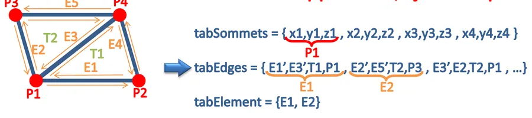
Formats de fichier
- Indexés : OFF, OBJ, PLY, glTF.
- Non indexé : STL (chaque triangle porte ses trois sommets).
Affichage avec OpenGL
Plutôt que d'envoyer les sommets un par un, on transmet des tableaux :
- VA (Vertex Array) : tableaux stockés en mémoire centrale, envoyés à chaque image ;
- VBO (Vertex Buffer Object) : tableaux stockés sur la carte graphique, ce qui évite de les renvoyer à chaque rafraîchissement.
Les VBO sont aujourd'hui la norme : ils sont gérés par toutes les cartes depuis OpenGL 1.5, et c'est le seul mode du profil « core » d'OpenGL 3.x, de WebGL et de Vulkan.
Types de primitives : GL_TRIANGLES, GL_TRIANGLE_STRIP, GL_TRIANGLE_FAN, et historiquement GL_QUADS, GL_QUAD_STRIP et GL_POLYGON.
GL_QUADS et GL_POLYGON ont disparu du profil core d'OpenGL 3.2 et n'existent pas en WebGL : on triangule les faces avant l'envoi.
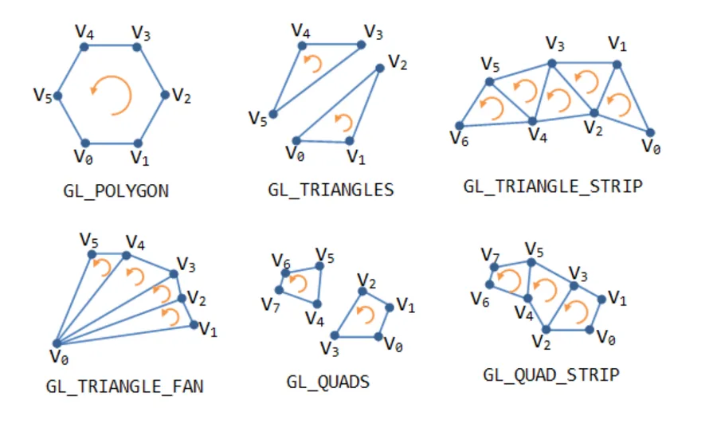
Conclusion
Un maillage est un ensemble de sommets, d'arêtes et de faces, complété par d'autres propriétés (normales, couleurs…). Les arêtes ou les faces ne sont pas forcément stockées explicitement, et les liaisons disponibles (sommets/faces, sommets/sommets, arêtes/faces) dépendent de la structure choisie : il faut arbitrer entre taille mémoire, parcours et accès à la topologie.
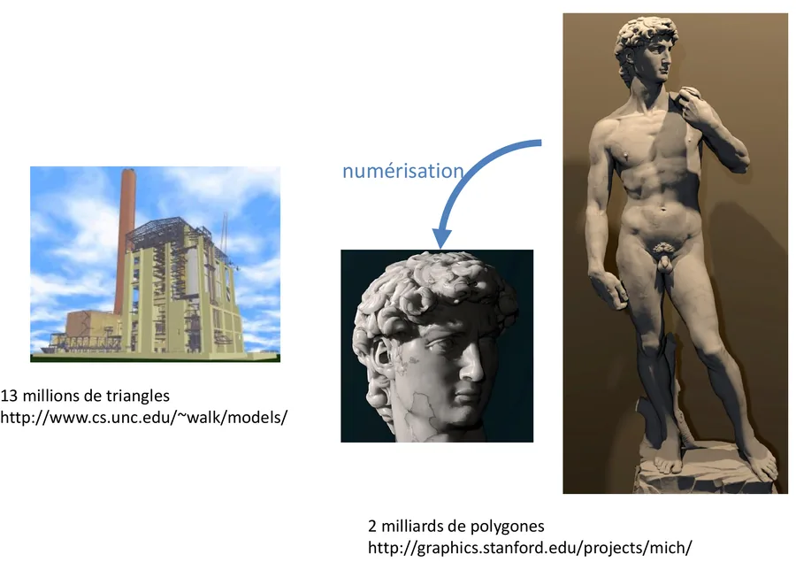
Ce chapitre s'appuie sur les cours de Loïc Barthe (IRIT), Nicolas Roussel (Inria Lille), Sylvain Brandel (LIRIS), Gilles Gesquière et Rémi Bénière (C4W).
TP 2 — Charger et exporter un fichier OFF
Les maillages utilisés sont au format OFF, un format texte (ASCII) :
OFF
8 12 0 ← nombre de sommets, de faces, d'arêtes
0.256 0.365 0.569 ← sommet 0 : x y z
2.365 2.654 8.145 ← sommet 1
...
3 0 1 2 ← face : nombre de sommets, puis leurs indices
3 2 5 9
3 6 0 4- La première ligne rappelle le format :
OFF. - Viennent ensuite le nombre de sommets, le nombre de faces et le nombre d'arêtes, ce dernier souvent laissé à 0.
- La liste des sommets suit : trois flottants par sommet, numérotés à partir de 0.
- Enfin, la liste des faces : le nombre de sommets de la face (ici toujours 3), puis leurs indices. La première face relie les sommets 0, 1 et 2.
Téléchargez buddha.off (ou un autre fichier en haut du chapitre), vérifiez dans un éditeur qu'il respecte ce format, et visualisez-le par exemple avec MeshLab.
- Chargement. Écrivez la lecture du fichier dans vos propres structures de données (ou dans celles de Unity).
- Centrage. On ne connaît ni la taille ni la position de l'objet. Calculez son centre de gravité (somme des sommets divisée par leur nombre) et recentrez le maillage sur l'origine.
- Normalisation. Divisez toutes les coordonnées par la plus grande coordonnée en valeur absolue : le maillage tient alors dans \([-1, 1]^3\) et tous les objets chargés ont à peu près la même taille.
- Normales. Les fichiers OFF ne contiennent pas de normales : calculez la normale de chaque triangle, puis celle de chaque sommet. Comparez les deux éclairages.
- Export. Écrivez la sauvegarde au format OFF. Pour tester, chargez un maillage, retirez-lui n faces ainsi que les sommets devenus isolés, enregistrez-le, puis ouvrez le résultat dans MeshLab.
Exercice inspiré d'un TP de Loïc Barthe (IRIT).
Chapitre 3
Transformations et projections
Placer, orienter et dimensionner des objets, puis les projeter sur l'écran : tout s'écrit avec des matrices 4 × 4 en coordonnées homogènes.
Rappels sur les vecteurs
Le vecteur \(\vec{AB}\) a pour coordonnées \((B_x - A_x,\ B_y - A_y,\ B_z - A_z)\). On peut additionner, soustraire des vecteurs et les multiplier par un scalaire.
Norme
Dans un repère orthonormé, \(\lVert\vec u\rVert = \sqrt{u_x^2 + u_y^2 + u_z^2}\). La norme de \(\vec{AB}\) est la distance de A à B. Un vecteur de norme 1 est dit normé ; tout vecteur non nul \(\vec u\) a une version normée de même direction : \(\vec u / \lVert\vec u\rVert\).
Produit scalaire
Il est symétrique, distributif et homogène, et \(\vec u \cdot \vec u = \lVert\vec u\rVert^2\). Il sert à calculer l'angle entre deux vecteurs, et son signe indique de quel côté se trouve \(\vec v\) par rapport au plan orthogonal à \(\vec u\) : positif si l'angle est aigu, nul s'ils sont orthogonaux, négatif si l'angle est obtus. C'est le test utilisé pour savoir si une face est tournée vers la caméra ou vers une lumière.
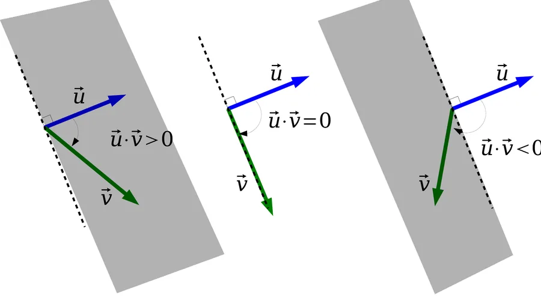
Produit vectoriel
Le résultat est orthogonal aux deux vecteurs de départ : c'est l'outil pour construire un repère ou calculer une normale (chapitre 2).
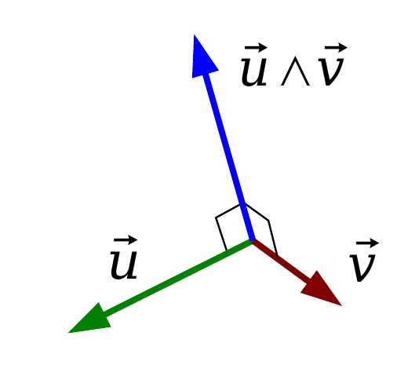
Matrices
On utilise l'addition, la multiplication par un scalaire et surtout le produit de matrices, ainsi que la transposée, le déterminant et l'inverse (qui n'existe pas toujours). Les transformations sont des matrices ; les enchaîner revient à multiplier ces matrices.
Transformations en 2D
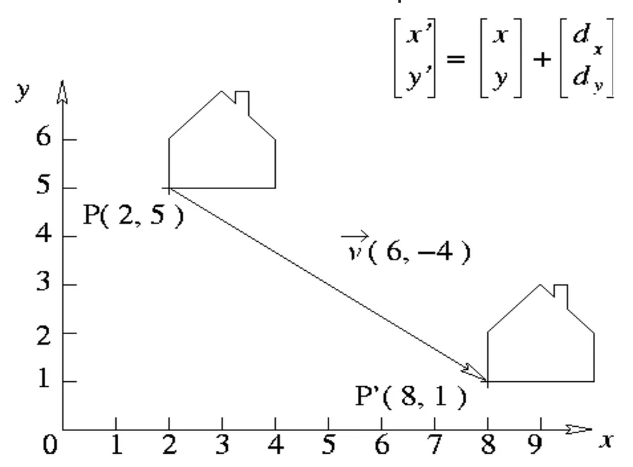
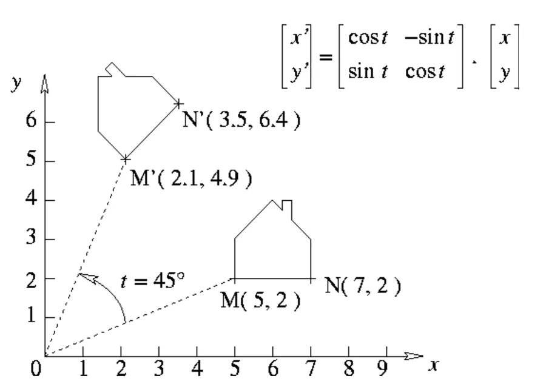
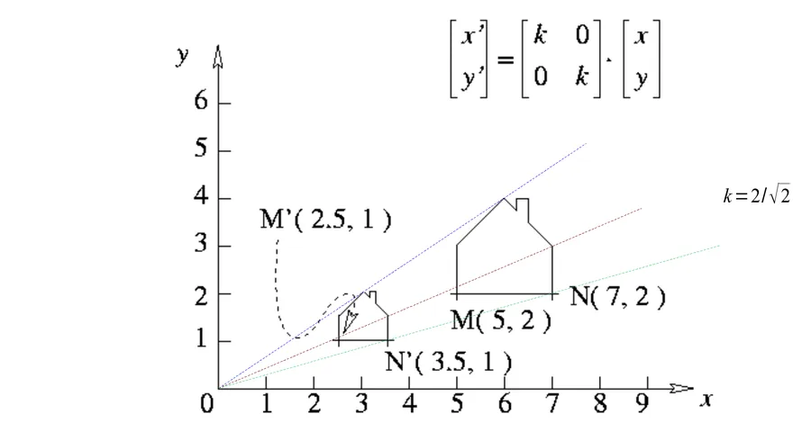
Les mêmes relations s'écrivent en 3D, mais trois difficultés apparaissent : la translation est une addition alors que les autres transformations sont des produits ; l'ordre des transformations compte ; la rotation 3D demande de choisir un axe.
Coordonnées homogènes
Pour écrire toutes les transformations affines comme des produits de matrices, on ajoute une quatrième coordonnée w : \(w = 1\) pour un point, \(w = 0\) pour un vecteur (une direction, qu'une translation ne doit pas déplacer). Le point homogène \((x_h, y_h, z_h, w_h)\) correspond au point 3D \((x_h/w_h,\ y_h/w_h,\ z_h/w_h)\).
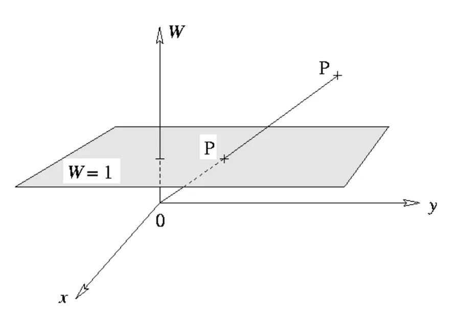
Translation \(P' = T P\), mise à l'échelle \(P' = S P\), réflexion par rapport au plan xOz \(P' = M_y P\) (on inverse y).
Rotations
Autour des axes du repère, d'angle \(\alpha\) :
Autour d'un axe quelconque de vecteur directeur unitaire \((x, y, z)\), avec \(c = \cos\alpha\), \(s = \sin\alpha\) et \(t = 1 - \cos\alpha\) :
Pour l'axe z (x = y = 0, z = 1), on retrouve bien \(R_z\).
Composer des transformations
Une suite de transformations est un produit de matrices, appliqué de droite à gauche. Une rotation suivie d'une mise à l'échelle donne \(P'' = S_k R_\alpha P = (S_k R_\alpha) P\) : on peut calculer la matrice composée une fois pour toutes. Sans coordonnées homogènes, une translation suivie d'une mise à l'échelle donnerait \(P'' = S_k P + S_k \vec T\), qui n'est plus un simple produit ; en homogène, c'est \(P'' = S_k\,T\,P\).
Le produit de matrices n'est pas commutatif : tourner puis translater ne donne pas le même résultat que translater puis tourner, et de même pour rotation et mise à l'échelle non uniforme.
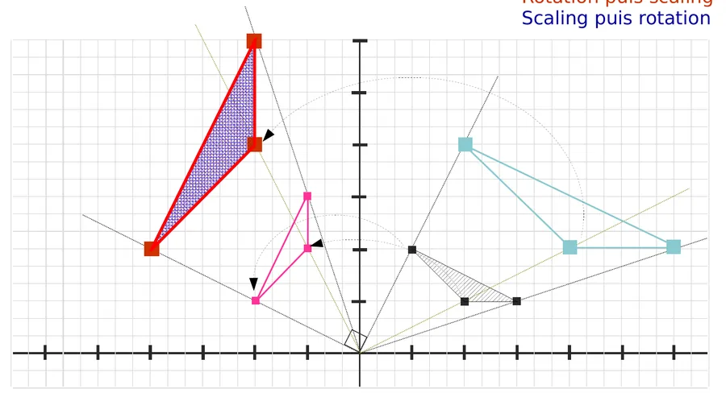
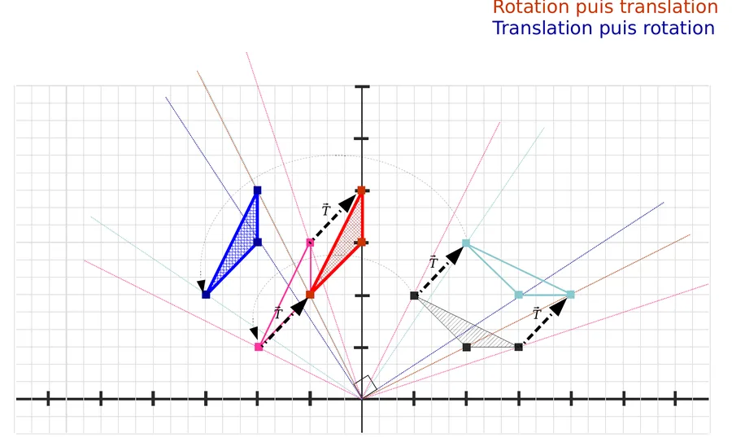
Application : modélisation hiérarchique. Un bras articulé se décrit par une chaîne de repères : la base est placée dans le repère du sol, le bras dans celui de la base, l'avant-bras dans celui du bras. Chaque pièce a sa matrice locale ; sa position finale est le produit des matrices depuis la racine. Tourner l'épaule entraîne automatiquement l'avant-bras : c'est le principe des graphes de scène (la hiérarchie de Unity, par exemple).
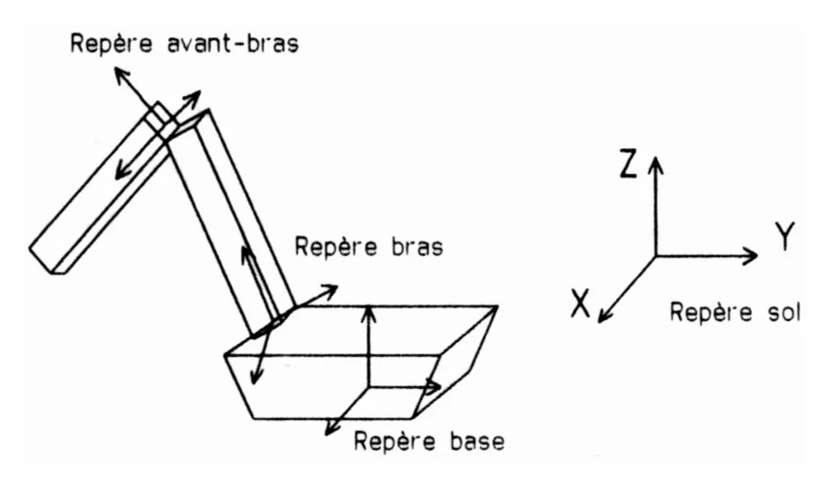
Projections
La projection est l'étape qui fait passer de la scène 3D à l'image 2D, dans la chaîne de rendu : changement de repère, découpage, projection, transformation de visualisation, tracé.
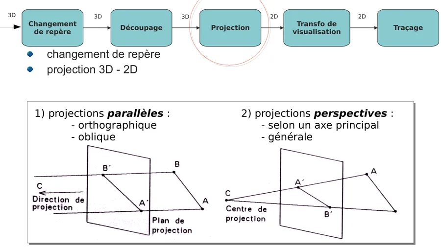
Projections parallèles
Tous les rayons de projection sont parallèles. La projection est orthographique si leur direction est perpendiculaire au plan de projection, oblique sinon. Les projections parallèles conservent le parallélisme des droites et les rapports de distances le long d'une même direction : on les utilise en dessin technique.
La projection orthographique revient à supprimer une coordonnée : supprimer z donne la vue de dessus, y la vue de côté, x la vue de face.
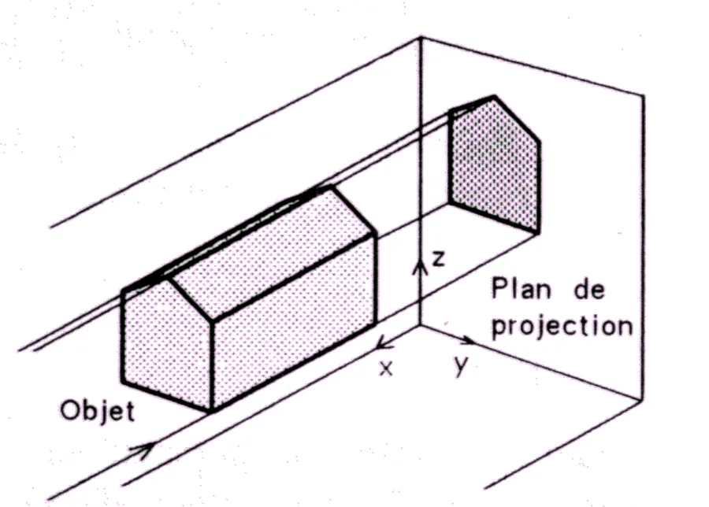
En projection oblique, les fuyantes sont tracées à 45° : en perspective cavalière elles gardent leur longueur, en perspective cabinet elles sont réduites de moitié, ce qui paraît plus naturel. Faire tourner l'objet avant une projection orthographique donne une projection axonométrique : \(M_{\text{axo}} = M_{\text{orth},x}\, R_z R_y R_x\, T\).
Pour le découpage, on ramène le volume de vue (un parallélépipède entre les plans proche et lointain) à un volume canonique par un changement de repère.
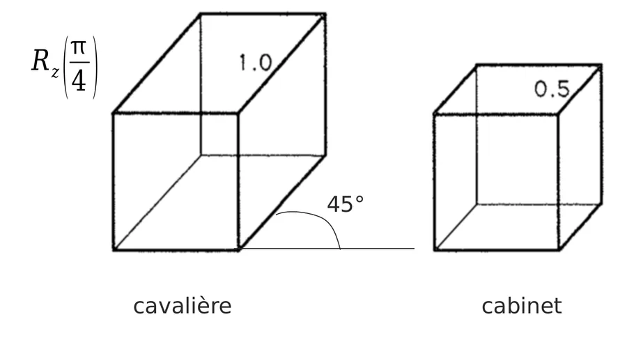
Projection perspective
L'image d'un point M par la projection perspective de centre O sur le plan P est l'intersection de la droite (OM) avec P. C'est le modèle de la caméra (ou de l'œil) ; une projection perspective dont le centre est rejeté à l'infini est une projection parallèle.
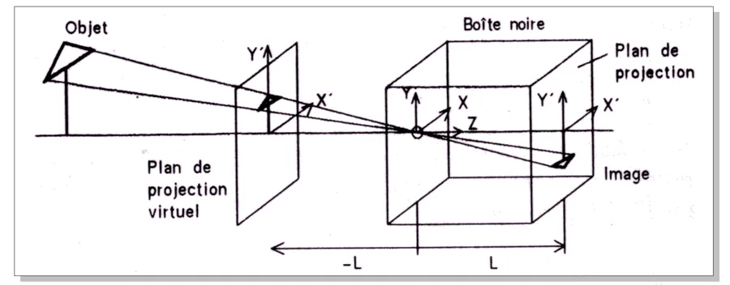
Elle ne conserve pas le parallélisme des droites non parallèles au plan de projection, et la taille apparente d'un objet est inversement proportionnelle à sa distance au centre de projection. Pour un segment [MM'] parallèle au plan de projection, à la distance d du centre, le plan étant à la distance \(d_0\) :
Avec le centre de projection à l'origine, l'axe de visée selon z et le plan de projection à la distance near, le point projeté s'obtient par Thalès :
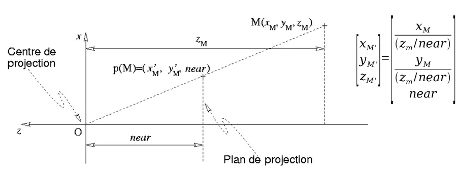
En coordonnées homogènes, la division par \(z_M\) est confiée à w :
Diviser par w' redonne les formules précédentes. C'est exactement ce que fait la carte graphique après le vertex shader (la « division perspective »). Les matrices de projection d'OpenGL ou de Unity conservent en plus une profondeur entre les plans near et far, utilisée par le tampon de profondeur.
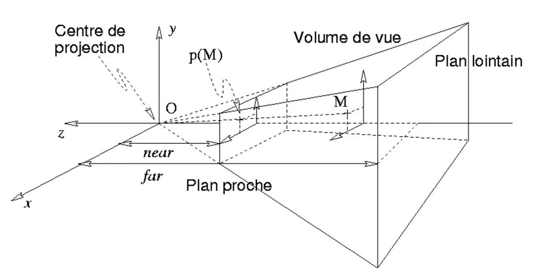
Points de fuite
Si une droite D coupe le plan de projection, les projections de toutes les droites parallèles à D passent par un même point F, le point de fuite. On classe les perspectives par le nombre de points de fuite des axes du repère, c'est-à-dire le nombre d'axes qui coupent le plan de projection. On en a généralement deux (caméra verticale, non alignée sur un axe) ; un troisième n'apporte guère plus de réalisme.
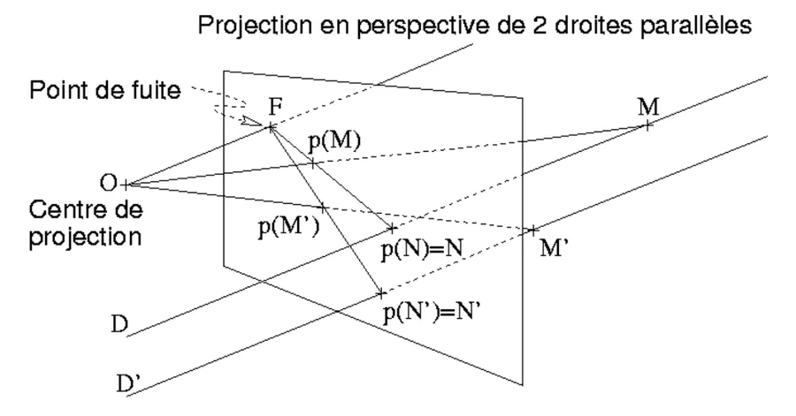
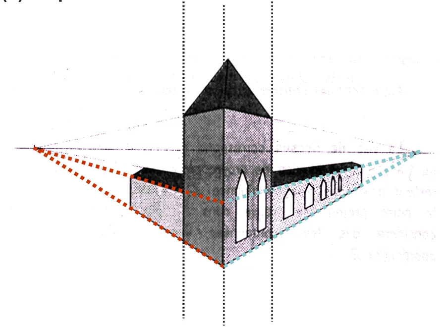
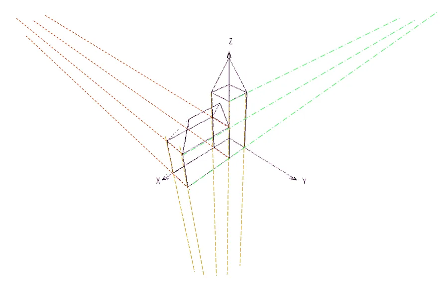
Chapitre tiré du cours de Gilles Gesquière (LIRIS).
Chapitre 4
Modèles volumiques
Au lieu de décrire seulement l'enveloppe d'un objet, on décrit la matière qui le remplit : voxels, octrees, surfaces implicites, arbres CSG. On verra aussi comment revenir à une surface avec l'algorithme des marching cubes.
Surfacique ou volumique ?
Un modèle 3D peut être surfacique (polygonal ou paramétrique, chapitres 1, 2, 7 et 8) ou volumique : voxels et octrees, surfaces implicites classiques ou discrètes. Les volumes sont indispensables dès que l'intérieur compte.
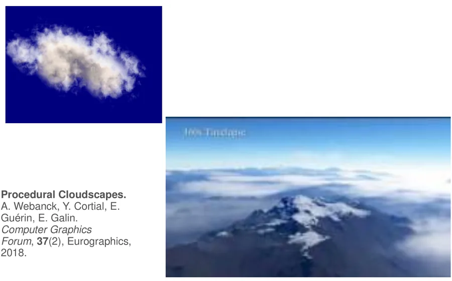
Pourquoi des terrains volumiques ?
Un terrain est usuellement une fonction d'élévation h(x, y), continue ou interpolée entre des points (carte de hauteurs). On peut l'enrichir par un modèle en couches qui empile des matériaux (roche, sable, eau). Mais ces représentations ne savent pas décrire une arche, une grotte ou un surplomb : à chaque position (x, y) ne correspond qu'une seule hauteur. Une représentation en volume (cubes ou piles de matière) lève cette limite, au prix de son caractère discret.
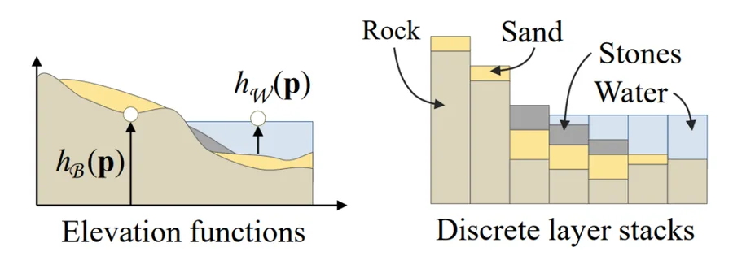
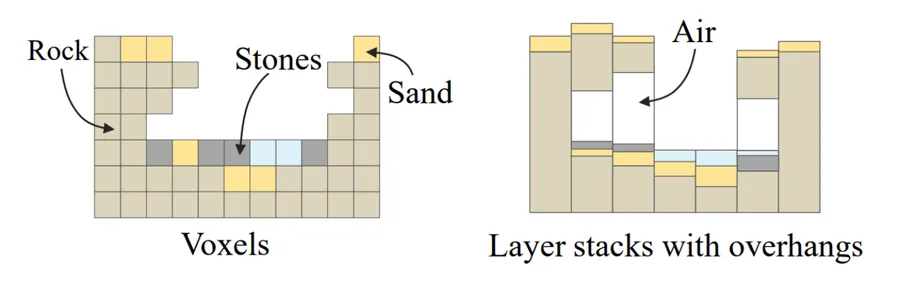
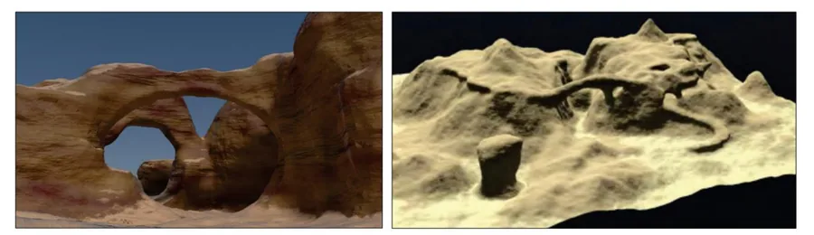
Voxels
Un voxel (volume element) est une case d'une grille 3D régulière ; chaque case indique la présence ou l'absence de matière (ou une densité, une couleur…). Pour voxeliser un objet, on l'englobe dans une grille et on marque les cases qu'il occupe. Le modèle est simple, mais la mémoire croît comme le cube de la résolution : 1024³ voxels représentent déjà un milliard de cases.
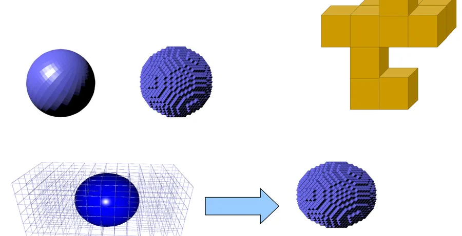
Octrees
Un octree est un arbre dont chaque nœud a huit fils. L'octree régulier subdivise récursivement un cube en huit sous-cubes égaux, jusqu'à une profondeur fixée ; ses feuilles sont les voxels.
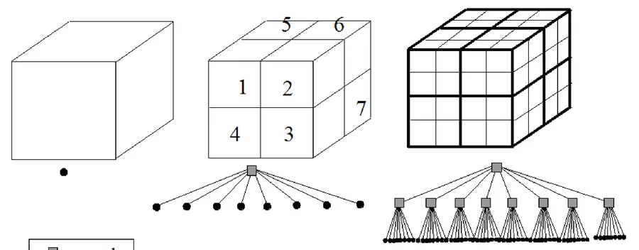
Dans un octree adaptatif, la profondeur varie selon les branches : on ne subdivise que là où c'est utile, typiquement près de la surface.
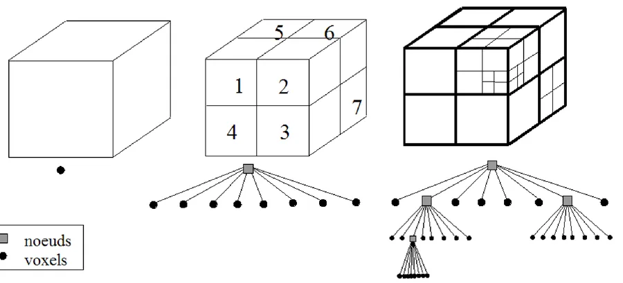
Représenter un objet par un octree
- Représentation surfacique
- Seules comptent les cellules qui coupent la surface. Dans un octree régulier, une feuille est pleine (1) si sa cellule coupe la surface, vide (0) sinon. Dans un octree adaptatif, une cellule qui ne coupe pas la surface devient une feuille vide ; une cellule qui la coupe est soit une feuille pleine si la précision voulue est atteinte, soit un nœud à subdiviser.
- Représentation volumique
- On distingue en plus l'intérieur de l'extérieur : une feuille vaut par exemple 0 si elle coupe la surface, 1 à l'intérieur et −1 à l'extérieur. Dans un octree adaptatif, seules les cellules qui coupent la surface sont subdivisées ; les autres deviennent directement des feuilles « intérieures » ou « extérieures ».
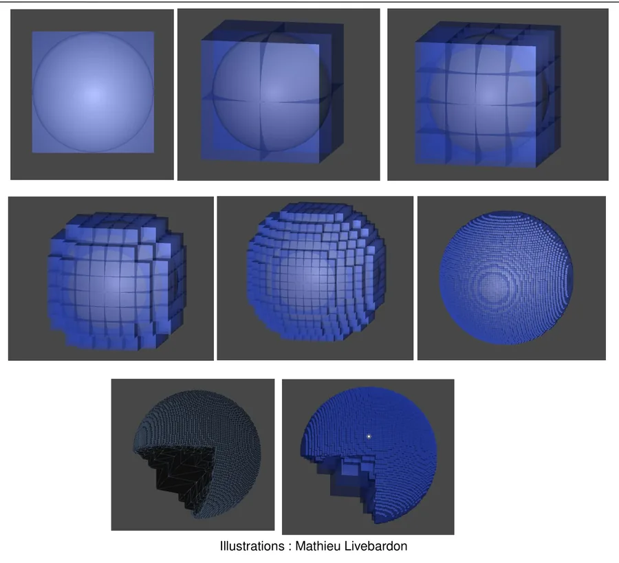
| Avantages | Limites |
|---|---|
|
|
Variantes pour réduire encore le nombre de cellules
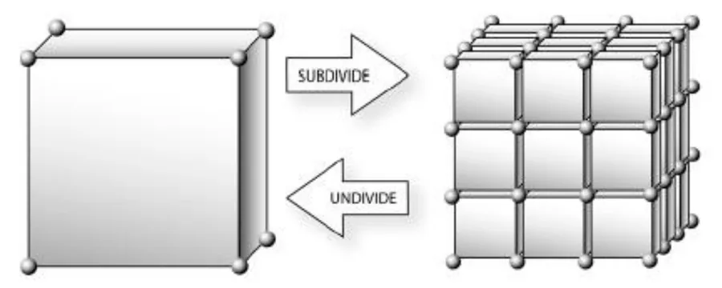
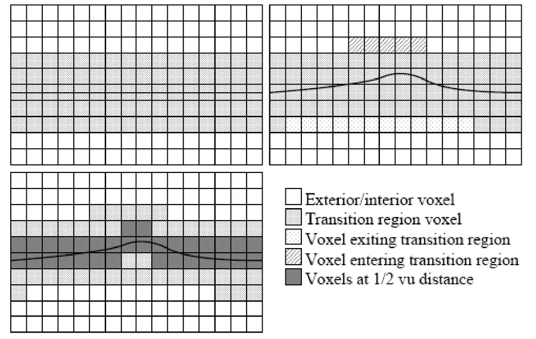
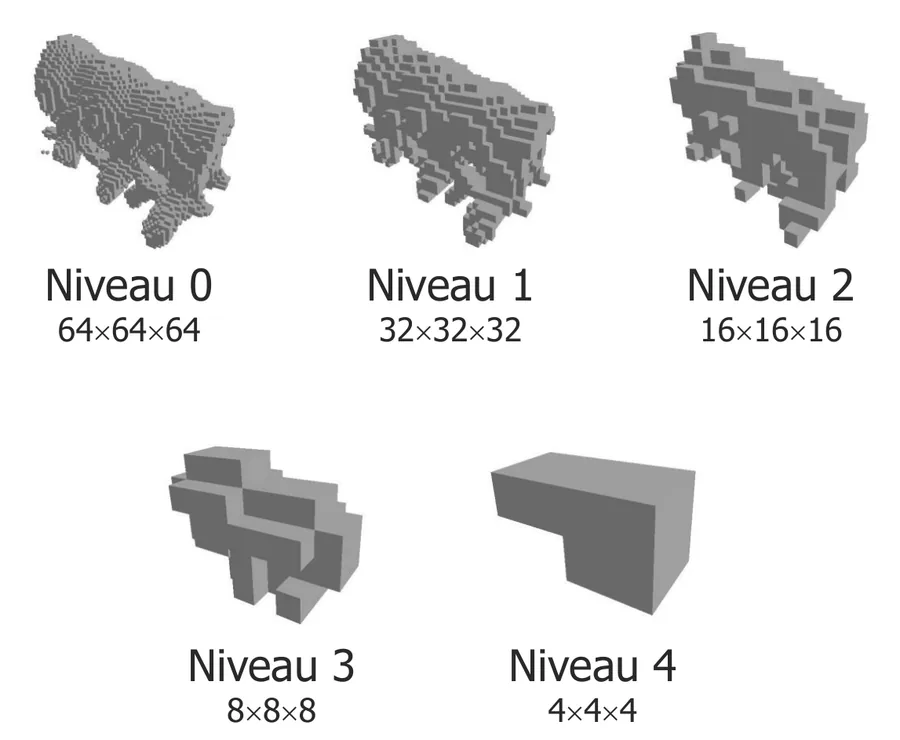
Surfaces implicites
Une surface implicite est l'ensemble des points où une fonction de potentiel f atteint une valeur seuil (iso) :
Avec la convention « f > iso à l'intérieur », on combine facilement des objets :
- union : \(f = \max(f_1, f_2)\) ;
- intersection : \(f = \min(f_1, f_2)\) ;
- mélange : \(f = f_1 + f_2\). Les deux formes fusionnent progressivement quand elles se rapprochent, ce qui est idéal pour les formes organiques.
Les surfaces implicites discrètes stockent le potentiel dans une grille de voxels : une cellule est pleine si son potentiel dépasse le seuil. Sculpter revient alors à ajouter ou retirer du potentiel localement, comme avec un outil de modelage.
Arbres CSG
La Constructive Solid Geometry décrit un objet par un arbre de composition : les feuilles sont des primitives (cube, sphère, cylindre…), les nœuds des opérateurs booléens (union ∪, intersection ∩, différence −) ou des transformations. C'est le modèle des logiciels de CAO et d'OpenSCAD ; il se marie naturellement avec les surfaces implicites, où les opérations booléennes deviennent des max et des min.
Du volume à la surface : marching cubes
Pour afficher un volume, on extrait sa surface sous forme de triangles. L'algorithme des marching cubes (Lorensen et Cline, 1987) parcourt la grille cellule par cellule :
- on marque chaque sommet de la cellule « + » (dedans) ou « − » (dehors) selon le signe de f − iso ;
- si tous les sommets ont le même signe, la cellule ne coupe pas la surface ;
- sinon, la surface traverse chaque arête dont les extrémités sont de signes opposés : on y place un point ;
- une table précalculée indique comment relier ces points en triangles.
En 3D, un cube a 2⁸ = 256 configurations de signes ; par symétries et rotations, il reste 15 configurations de base, dont la cellule vide, soit 14 cas non triviaux. L'ensemble des cellules sécantes fournit un maillage triangulaire de la surface.
Le point d'intersection sur une arête \([P_1 P_2]\), avec \(f(P_1) = a < 0\) et \(f(P_2) = b > 0\) (après soustraction du seuil), s'obtient par interpolation linéaire :
Les arêtes vives sont arrondies, car un point d'intersection par arête ne suffit pas à capturer un angle. Les versions étendues (Extended Marching Cubes, Kobbelt et al., SIGGRAPH 2001) évaluent aussi la normale de la surface aux points d'intersection et ajoutent un sommet à l'intersection des plans tangents.
Modèle B-Rep
La Boundary Representation décrit un objet par ses bords (faces, arêtes, sommets et leurs relations), sans notion explicite de volume. Si le bord est fermé et cohérent (orientable, sans auto-intersection), il délimite un solide : on parle de B-Rep solide. C'est la représentation interne des modeleurs de CAO, souvent couplée à un arbre CSG.
Chapitre compilé à partir des cours de modélisation géométrique de l'IRIT (équipe Vortex), de Christian Jacquemin (LIMSI), Marc Daniel (LSIS) et Gilles Gesquière (LIRIS).
TP 3 — Modèles volumiques
Exercice 1 — Énumération spatiale
- Représentez une sphère par énumération spatiale : englobez-la dans une boîte, subdivisez la boîte en cubes, et gardez les cubes dont le centre est dans la sphère.
- Gérez plusieurs sphères (deux pour commencer) ; la boîte englobe alors tous les objets.
- Ajoutez des opérateurs d'union et d'intersection. Pour l'intersection, un cube n'est affiché que s'il appartient aux deux sphères.
- Rendez la taille des cubes, donc la résolution, paramétrable.
- Généralisez à une liste de n sphères.
- (optionnel) Remplacez les sphères par n'importe quel objet défini implicitement, par exemple une quadrique (chapitre 1).
Exercice 2 — Surfaces implicites discrètes
Chaque cube stocke maintenant une valeur de potentiel, initialisée par exemple avec l'exercice 1 ; il est visible si son potentiel dépasse un seuil. Créez un outil qui ajoute ou retire de la matière : par exemple une sphère Unity que l'on déplace dans la scène et qui ajoute ou soustrait du potentiel aux cubes qu'elle touche.
Pour aller plus loin : remplacez l'affichage par cubes par une surface extraite par marching cubes.
Chapitre 5
Simplification de maillages et niveaux de détail
Un terrain ou un objet numérisé peut compter des millions de triangles. Simplifier, c'est produire un maillage plus léger qui ressemble le plus possible à l'original, puis choisir à l'affichage la version adaptée.
Le problème
Un terrain se représente naturellement par un maillage uniforme : une matrice de points (x, z) portant chacun une hauteur. Mais un terrain peut compter des millions de faces : le Grand Canyon échantillonné en 4 097 × 2 049 sommets représente environ 16,7 millions de triangles. Impossible d'afficher en temps réel une zone de plusieurs km², comme l'exige un simulateur de vol, sans réduire ce nombre.
Simplifier un maillage
La simplification (ou décimation) regroupe les algorithmes qui transforment un maillage en un autre comportant moins de faces, d'arêtes et de sommets. Elle est pilotée par des critères de qualité choisis par l'utilisateur, qui cherchent à préserver certaines propriétés de l'original : distance géométrique, apparence visuelle…
Les schémas de simplification sont en général itératifs (on retire un sommet ou une arête à la fois) et réversibles : on peut transmettre le maillage simplifié, puis la suite des opérations inverses pour retrouver progressivement l'original. On peut y voir une décomposition en une composante basse fréquence (le maillage décimé) et une composante haute fréquence (la différence avec l'original), que l'opérateur inverse sait recombiner.
Cadre général
- Opérateurs locaux : ils agissent sur un sommet, une arête ou une face et font décroître localement le nombre de polygones.
- Opérateurs globaux : ils traitent l'objet dans son ensemble, plutôt comme un rééchantillonnage.
Préserver la topologie, c'est conserver le genre de l'objet et ne pas fusionner des parties distinctes. Cela limite le taux de simplification, et ce n'est pas toujours nécessaire : un objet lointain peut perdre ses trous sans que cela se voie.
Niveaux de détail (LOD)
Le principe : pour chaque objet de la scène, stocker plusieurs versions plus ou moins détaillées et afficher la plus appropriée. Il faut donc savoir construire les versions simplifiées (combien, et à quel degré ?) et choisir la bonne au moment du rendu. Les usages : rendu dépendant du point de vue, scènes comportant un très grand nombre d'objets, navigation interactive, visualisation de terrains, transmission progressive par le réseau.
LOD discret
Plusieurs représentations du même objet sont précalculées ; à l'exécution, on en sélectionne une, par exemple selon la distance. Les niveaux peuvent aussi répondre à des besoins métier, comme les niveaux LOD0 à LOD3 de la maquette urbaine CityGML, de l'emprise au sol au bâtiment détaillé.
LOD continu
Une seule structure représente l'objet avec un niveau de détail réglable au polygone près : on utilise exactement le nombre de polygones voulu, et la géométrie est modifiée pendant l'exécution. Exemple : les progressive meshes de Hoppe, qui enregistrent la suite des fusions d'arêtes.
LOD dépendant du point de vue
Extension du LOD continu, avec un critère de simplification qui dépend du point de vue : la représentation est anisotrope, différentes zones d'un même objet sont affichées à des niveaux de détail différents (plus fin près de la caméra ou sur la silhouette). Pour les terrains, l'algorithme ROAM (Real-time Optimally Adapting Meshes) génère les triangles à la volée en fonction de la caméra.
Opérateurs locaux
Les opérateurs usuels préservent la topologie et ont chacun leur inverse :
| Opérateur | Inverse |
|---|---|
| Vertex removal (suppression de sommet) | Vertex insertion |
| Edge collapse (fusion d'arête) | Vertex split |
| Half-edge collapse | Restricted vertex split |
Suppression de sommet
On détruit un sommet ainsi que les arêtes et faces qui lui sont liées. Cela crée un trou à k côtés (k étant le nombre de voisins du sommet), que l'on retriangule avec k − 2 triangles. On perd donc 1 sommet et 2 triangles.
Fusion d'arête
L'arête est contractée en un seul sommet ; les deux triangles qui la bordent disparaissent (on perd 1 sommet, 3 arêtes, 2 faces). L'opération inverse, le vertex split, réinsère l'arête et ses triangles. Dans la variante half-edge collapse, le nouveau sommet est l'une des deux extrémités : aucune nouvelle position n'est créée, et les sommets du résultat sont un sous-ensemble de ceux de l'original.
Avant d'appliquer une fusion, on vérifie qu'elle ne crée pas de repliement : un triangle voisin qui se retourne et recouvre ses voisins (sa normale s'inverse). Il faut aussi éviter les triangles dégénérés, très allongés, qui rendent le maillage non conforme.
Fusion de polygones
Plusieurs polygones adjacents presque coplanaires sont fusionnés en un seul, qui est ensuite retriangulé. Cet opérateur généralise la suppression de sommet : il s'applique à des polygones quelconques, élimine plusieurs sommets d'un coup et peut boucher des trous.
Décimation incrémentale et métrique quadrique
La décimation incrémentale applique ces opérateurs un par un, en choisissant à chaque étape l'opération qui introduit le moins d'erreur selon un critère choisi par l'utilisateur. Elle donne en général des maillages de bonne qualité. La méthode la plus répandue est celle de Garland et Heckbert (1997), la Quadric Edge Collapse Decimation de MeshLab : chaque sommet porte une matrice 4 × 4 (une « quadrique ») qui mesure la somme des distances au carré aux plans de ses faces d'origine. Le coût d'une fusion se calcule alors très vite, et la position optimale du nouveau sommet s'obtient en minimisant cette quadrique.
Opérateur global : regroupement de sommets
Dans le regroupement de sommets (vertex clustering ou cell collapse), tous les sommets situés dans une même cellule d'une grille sont unifiés en un seul :
- Pour une tolérance ε > 0, on partitionne une boîte englobant le maillage en cellules de taille au plus ε.
- Dans chaque cellule, on calcule un sommet représentatif qui remplace tous les sommets de la cellule.
- Les triangles dont deux ou trois sommets tombent dans la même cellule dégénèrent en arête ou en point : on les supprime.
- Deux représentants P et Q sont reliés si au moins un sommet de la cellule de P était relié à un sommet de la cellule de Q dans le maillage d'origine.
Le représentant le plus simple est la moyenne des sommets \(P_1, \dots, P_k\) de la cellule. On peut aussi donner un poids \(w_i \ge 0\) à chaque sommet selon son importance (courbure, aire des faces voisines…) :
La méthode est rapide, robuste et en O(n) pour n sommets, et elle garantit une approximation globale (erreur bornée par la taille des cellules). En revanche, elle ne préserve pas la topologie : un morceau de surface peut se réduire à un point, et le résultat n'est pas forcément une variété (2-manifold) même si l'original l'était. La qualité n'est jamais excellente, et le taux de simplification dépend de la résolution de la grille.
Mesurer l'erreur
Mesurer l'erreur permet de guider la simplification, de connaître la qualité du résultat, de savoir quand afficher un niveau de détail donné et d'équilibrer la qualité dans la scène. On distingue l'erreur géométrique et l'erreur sur les attributs (normales, couleurs, coordonnées de texture).
Pour comparer deux surfaces C et D, on utilise la distance de Hausdorff : la plus grande distance entre un point de l'une et la surface de l'autre, dans les deux sens.
On peut retenir l'erreur maximale ou une erreur moyenne ; en pratique, on l'estime sur des points échantillonnés (outil Metro, ou le filtre « Hausdorff Distance » de MeshLab).
Sélection du niveau de détail
- Type de LOD : discret, continu ou dépendant de la vue.
- Critère de sélection : distance à la caméra, taille projetée à l'écran, facteurs perceptifs, conditions d'environnement (brouillard, vitesse…).
- Transitions : un changement brutal de niveau se voit (popping) ; on mélange les deux versions par fondu (alpha blending) ou on les interpole (geomorphing).
Simplification structurelle : les imposteurs
Ces méthodes changent la nature de la représentation : on remplace par exemple un objet polygonal par un quadrilatère texturé avec une image rendue à partir de la version détaillée. Ces LOD sont appelés imposteurs (ou billboards). Leurs limites : l'image dépend souvent du point de vue, et l'éclairage ne suit pas.
Exemple d'une prairie (Frank Perbet, Imagis) : de près, chaque brin d'herbe est modélisé en 3D ; plus loin, une texture semi-transparente de brins est plaquée sur des polygones ; au loin, une simple texture verte suffit.
Chapitre adapté du cours de Gilles Gesquière (LIRIS).
TP 4 — Simplification
Exercice 1 — Simplification par partitionnement
Implémentez le regroupement de sommets vu en cours :
- construire une grille englobant le maillage ;
- fusionner les sommets de chaque cellule en un représentant ;
- mettre à jour les triangles et supprimer ceux qui dégénèrent.
Testez sur les maillages du TP 2 et faites varier la taille de la grille pour régler la résolution.
Exercice 2 (pour aller plus loin) — Comparer les méthodes de MeshLab
La complexité des objets d'une scène 3D a ses limites, et des outils de sculpture comme ZBrush produisent vite des millions de faces. On peut les réduire après coup avec MeshLab (Windows, macOS, Linux), même s'il vaut mieux que l'infographiste vise le bon budget de polygones dès le départ.
Dans MeshLab : Filters › Remeshing, Simplification and Reconstruction › Simplification: Quadric Edge Collapse Decimation (variante with texture pour un modèle texturé). Les paramètres principaux :
- Quality threshold (0 à 1)
- Pénalise les triangles mal formés. 0 accepte toutes les formes ; plus la valeur est haute, plus les triangles restent bien formés, ce qui demande davantage de faces pour une même fidélité. Une valeur de 1 donne de bons résultats.
- Preserve Boundary of the mesh
- Évite de modifier les bords du maillage. Sans effet sur un maillage fermé.
- Preserve Normal
- Empêche les faces de se retourner, au prix d'un calcul un peu plus long. Si des normales sont malgré tout inversées : Filters › Normals, Curvatures and Orientation › Re-Orient all faces coherently (maillages variétés uniquement).
- Optimal position of simplified vertices
- Place le sommet issu de la fusion à la position qui minimise l'erreur ; désactivé, l'arête est ramenée sur l'une de ses extrémités (half-edge collapse).
- Planar simplification
- Ajoute des contraintes pour garder des triangles bien formés dans les zones parfaitement planes et finement découpées.
Comparez au moins Quadric Edge Collapse Decimation et Clustering Decimation, sur deux types d'objets : sans arêtes vives (le Bouddha) et avec arêtes vives (une maison ou un immeuble, modélisé par exemple dans Blender). Rédigez un compte rendu illustré de captures d'écran ; pour chaque méthode :
- décrivez son fonctionnement en une dizaine de lignes ;
- expliquez sur une page ce que vous observez selon les paramètres ;
- trouvez et testez des modèles qui lui posent problème (arêtes vives, changement de topologie…), sur une page.
Réglages MeshLab adaptés du tutoriel Polygon reduction with MeshLab de Shapeways (page aujourd'hui retirée).
Chapitre 6
Subdivision de maillages
L'inverse de la simplification : partir d'un maillage grossier et l'affiner par des règles simples, répétées, qui convergent vers une surface lisse.
Simplifier ou subdiviser ?
Dans les deux cas, on veut accéder au même objet avec des nombres de polygones différents, c'est-à-dire construire une hiérarchie de maillages. Elle peut se construire :
- de bas en haut (bottom-up) : on part du modèle détaillé, les feuilles de la hiérarchie, et on remonte vers la forme la plus simple. C'est le sens des méthodes du chapitre 5 ;
- de haut en bas (top-down) : on part de la version simplifiée, la racine, et on ajoute progressivement des détails. C'est le sens des surfaces de subdivision et des ondelettes.
Subdiviser combine deux étapes : un raffinement, qui découpe chaque face en plusieurs (par exemple un triangle en quatre, ou en trois autour de son centre), et une règle de positionnement des sommets, anciens et nouveaux, qui lisse la forme.
Rappels
Un schéma est interpolant si la courbe ou la surface limite passe par les points de contrôle, approximant si elle est seulement attirée par eux.
Entre deux points \(p_1\) et \(p_2\), l'interpolation linéaire est \(p(u) = u\,p_1 + (1 - u)\,p_2\), pour \(u \in [0, 1]\). Une polyligne est une courbe linéaire par morceaux, qui n'est que C0 aux sommets.
Courbes : couper les coins
Le corner cutting consiste à prendre deux points sur deux arêtes d'un polygone, à les relier par un segment, et à remplacer par ce segment tous les sommets et arêtes situés entre eux. Une coupe est locale si elle supprime exactement un sommet et en ajoute deux ; sinon elle est non locale.
Corner cutting simple. Sur chaque arête, on choisit deux nombres \(u \ge 0\) et \(v \ge 0\) avec \(u + v \le 1\), et on découpe l'arête dans les proportions \(u : 1 - (u + v) : v\). Les deux points intérieurs de chaque arête forment la nouvelle polyligne \(P_1\) ; en recommençant, on obtient \(P_2, P_3, \dots\) et l'on s'intéresse à la limite \(P_\infty = \lim_{i \to \infty} P_i\). Les valeurs de u et v peuvent changer d'une arête à l'autre et d'une itération à l'autre. Pour un polygone fermé, on découpe aussi l'arête qui relie le dernier point au premier.
Gregory et Qu, de Boor, puis Paluszny, Prautzsch et Schäfer ont montré que si tous les couples (u, v) sont à l'intérieur de la zone délimitée par \(u \ge 0\), \(v \ge 0\), \(u + 2v \le 1\) et \(2u + v \le 1\), alors \(P_\infty\) est une courbe C1.
L'algorithme de Chaikin
C'est le cas \(u = v = 1/4\), étudié par Chaikin en 1974 : chaque arête \([P_i^k, P_{i+1}^k]\) est remplacée par deux points situés au quart et aux trois quarts.
Le nombre de points double à chaque itération, et la courbe limite est une B-spline quadratique (de degré 2) : le schéma est approximant.
Surfaces de subdivision
Elles permettent de modéliser facilement des surfaces très variées, en général lisses, à partir d'un maillage de contrôle simple et compact que l'on manipule intuitivement. Elles savent aussi représenter des arêtes vives ou semi-vives. C'est l'outil de modélisation standard du cinéma d'animation (Pixar, OpenSubdiv) et le modificateur « Subdivision Surface » de Blender.
On part d'un maillage initial \(M_0\) et de règles de subdivision S, que l'on applique en boucle :
Le schéma de Loop
Proposé par Charles Loop en 1987 pour les maillages triangulaires, il est approximant. Chaque itération comporte trois étapes.
1. Un nouveau sommet par arête. Pour une arête intérieure \((v_1, v_2)\), bordée par les triangles dont les sommets opposés sont \(v_{\text{left}}\) et \(v_{\text{right}}\) :
2. Déplacement des anciens sommets. Un sommet v de valence n, de voisins \(v_1, \dots, v_n\), devient :
La valence d'un sommet est le nombre d'arêtes qui y aboutissent. Pour un sommet intérieur d'un maillage triangulaire, elle est égale au nombre de faces adjacentes. Dans un maillage triangulaire régulier, tous les sommets intérieurs ont une valence de 6 (4 dans un maillage de quadrilatères).
3. Quatre triangles par triangle. Chaque triangle \((x_1, x_2, x_3)\), dont les arêtes ont reçu les nouveaux sommets \(x_{12}, x_{23}, x_{31}\), est remplacé par \((x_1, x_{12}, x_{31})\), \((x_2, x_{23}, x_{12})\), \((x_3, x_{31}, x_{23})\) et \((x_{12}, x_{23}, x_{31})\).
// Étape 1 : nouveaux sommets d'arêtes
pour chaque arête e = (v1, v2) de M :
e' = 3/8 (v1 + v2) + 1/8 (vLeft(e) + vRight(e))
// Étape 2 : anciens sommets
pour chaque sommet v de M :
n = valence(v) ; a = alpha(n)
v' = (1 - n·a) v + a · somme(voisins(v))
// Étape 3 : nouvelles faces
pour chaque face (x1, x2, x3) de M :
ajouter (x1, x12, x31), (x2, x23, x12), (x3, x31, x23), (x12, x23, x31)Sur un bord, il manque \(v_{\text{left}}\) ou \(v_{\text{right}}\) : on prend alors le milieu de l'arête, \(e = \frac12(v_1 + v_2)\), et un sommet de bord ne tient compte que de ses deux voisins sur le bord, \(v' = \frac34 v + \frac18(v_a + v_b)\).
Pour les maillages de quadrilatères, le schéma équivalent est celui de Catmull-Clark (1978).
Subdivision adaptative
On ne subdivise que certaines zones, selon des critères : courbure, distance à la caméra, zone d'intérêt… Il faut décider où et comment subdiviser, en respectant trois contraintes : éviter les trous (un triangle subdivisé à côté d'un triangle qui ne l'est pas crée des sommets « pendants », ou T-junctions, qu'il faut raccorder), générer peu de faces et obtenir un maillage progressif.
Chapitre compilé à partir des cours de Loïc Barthe (IRIT), Sandrine Lanquetin (Université de Bourgogne), Gilles Gesquière (LIRIS) et Ching-Kuang Shene (Michigan Tech).
TP 5 — Subdivision
Exercice 1 — Subdivision de courbes
Implémentez l'algorithme de Chaikin, avec un nombre d'itérations paramétrable. Dans Unity, Gizmos.DrawLine suffit pour tracer le polygone de contrôle et la courbe obtenue.
Vérifiez que la courbe obtenue est bien une B-spline quadratique : comparez-la à la B-spline construite sur le même polygone de contrôle (chapitre 7).
Exercice 2 (optionnel) — Subdivision de surfaces
Implémentez le schéma de Loop sur l'un des modèles du TP 2 (par exemple buddha.off) ou sur Cube.obj, après l'avoir triangulé. Une structure de demi-arêtes (chapitre 2) facilite beaucoup l'accès aux sommets \(v_{\text{left}}\), \(v_{\text{right}}\) et aux voisins.
Chapitre 7
Courbes paramétriques : Hermite et Bézier
Décrire une courbe par une fonction d'un paramètre, puis la piloter avec des points de contrôle intuitifs : cubiques d'Hermite, polynômes de Bernstein, courbes de Bézier et algorithme de De Casteljau.
Courbe paramétrique
Une courbe est engendrée par le déplacement d'un point P dans l'espace. On peut prendre le temps t comme paramètre pour fixer les idées, mais n'importe quel scalaire u convient. Le point P(x, y, z) a les mêmes coordonnées que le vecteur \(\vec{OP}\).
Une courbe paramétrique de \(\mathbb{R}^3\) est une fonction \(f : \mathbb{R} \to \mathbb{R}^3\) :
Pour chaque valeur de u, on calcule indépendamment les trois coordonnées. Une même courbe admet plusieurs paramétrisations : le cercle de rayon r centré à l'origine s'écrit par exemple
Droites
La droite passant par \(P_1\) et \(P_2\) s'écrit \(P(u) = (1 - u)\,P_1 + u\,P_2\), pour \(u \in \mathbb{R}\). Quand u varie de 0 à 1, P parcourt linéairement le segment de \(P_1\) à \(P_2\) : c'est l'interpolation linéaire. Avec un point et un vecteur directeur : \(P(u) = P_1 + u\,\vec v\).
En modélisation géométrique, on utilise surtout un paramètre borné et normalisé, \(u \in [0, 1]\), ce qui est pratique pour manipuler des morceaux de courbes que l'on raccorde.
Paramètre et abscisse curviligne. Le paramètre u n'a pas de sens géométrique : avancer de \(\partial u\) ne fait pas toujours parcourir la même distance. L'abscisse curviligne \(s \in [0, \ell]\) est la longueur parcourue depuis l'origine de la courbe ; paramétrer par s permet par exemple de déplacer un objet à vitesse constante.
Cubiques
Les cubiques sont les courbes polynomiales paramétriques de degré 3 :
Sous cette forme, les coefficients a, b, c, d n'ont aucun sens visuel : un utilisateur ne peut pas dessiner la courbe qu'il imagine. Il faut des paramètres de contrôle intuitifs.
Cubique d'Hermite
On réécrit la cubique en fonction de paramètres géométriques : le point de départ \(P_0 = p(0)\), le point d'arrivée \(P_1 = p(1)\) et les tangentes \(V_0 = \dot p(0)\) et \(V_1 = \dot p(1)\). Comme \(\dot p(u) = 3a u^2 + 2b u + c\) :
En regroupant les termes, on obtient la courbe comme combinaison des quatre paramètres, pondérés par les fonctions de base d'Hermite :
Forme matricielle
La vitesse et l'accélération s'obtiennent en dérivant la matrice :
Exercices : effet des tangentes
Au milieu de la courbe, \(F_1 = F_2 = \frac12\), \(F_3 = \frac18\) et \(F_4 = -\frac18\), d'où \(p(\tfrac12) = \frac12(P_0 + P_1) + \frac18(V_0 - V_1)\). Avec \(P_0 = (0, 0)\) et \(P_1 = (2, 0)\) :
| \(V_0\) | \(V_1\) | \(p(1/2)\) | Allure |
|---|---|---|---|
| (1, 1) | (1, −1) | (1 ; 0,25) | arche basse |
| (4, 4) | (4, −4) | (1 ; 1) | arche plus haute |
| (8, 8) | (8, −8) | (1 ; 2) | la courbe forme une boucle |
| (−4, 0) | (4, 0) | (0 ; 0) | la courbe recule puis revient, sur l'axe |
| (−1, −1) | (−1, −1) | (1 ; 0) | courbe en S |
Plus les tangentes sont longues, plus elles « tirent » la courbe dans leur direction.
Exercice : interpoler des positions
On connaît les positions d'un objet à différents instants t. En reliant les points par des segments, on obtient une trajectoire C0 ; en reliant par des cubiques d'Hermite dont les tangentes coïncident en chaque point, on obtient une trajectoire C1, sans changement brusque de direction. Les tangentes peuvent par exemple être estimées à partir des points voisins, comme dans les splines de Catmull-Rom.
Polynômes de Bernstein
On cherche une famille de courbes de la forme \(p(u) = \sum_{i} N_i(u)\,P_i\) dont les fonctions de base vérifient \(\sum_i N_i(u) = 1\) : chaque point de la courbe est alors une combinaison affine des points de contrôle \(P_i\). La courbe est invariante par transformation affine : pour transformer la courbe, il suffit de transformer ses points de contrôle.
On part du développement binomial :
Pour un degré donné, les n + 1 polynômes sont linéairement indépendants. Ils sont symétriques, \(B_i^n(u) = B_{n-i}^n(1 - u)\) ; ils forment une partition de l'unité, \(\sum_i B_i^n(u) = 1\) ; ils sont positifs sur [0, 1] ; et ils vérifient la récurrence
Courbes de Bézier
Les \(n + 1\) points \(P_i\) sont les points de contrôle ; la courbe est de degré n (d'ordre n + 1), et les polynômes de Bernstein en sont les fonctions de base (ou de mélange). Le nombre de points de contrôle fixe donc le degré : 4 points donnent une cubique.
Propriétés
- Symétrie : \(\sum_i B_i^n(u)\,P_i = \sum_i B_i^n(1 - u)\,P_{n-i}\). Parcourue de 0 à 1 ou de 1 à 0, c'est la même courbe.
- Reparamétrage : pour \(t \in [a, b]\), on pose \(u = (t - a)/(b - a)\).
- Extrémités : la courbe interpole le premier et le dernier point, \(p(0) = P_0\) et \(p(1) = P_n\), et y est tangente au premier et au dernier segment du polygone de contrôle : \(\dot p(0) = n(P_1 - P_0)\) et \(\dot p(1) = n(P_n - P_{n-1})\).
- Enveloppe convexe : la courbe est contenue dans l'enveloppe convexe de ses points de contrôle, puisque chaque point est un barycentre à poids positifs. En prenant le min et le max de chaque coordonnée des points de contrôle, on obtient donc une boîte englobante alignée sur les axes, très utile pour les tests d'intersection.
- Diminution de la variation : une droite ne coupe pas la courbe plus de fois qu'elle ne coupe le polygone de contrôle. La courbe « oscille » moins que son polygone.
Exercice : la Bézier de contrôle P₀(0, 0), P₁(5, 5), P₂(10, 5), P₃(15, 0) — calculer p(0), p(1/4), p(1/2), p(3/4), p(1).
Pour u = 1/4, les poids \(B_i^3\) valent \(\frac{27}{64}, \frac{27}{64}, \frac{9}{64}, \frac{1}{64}\) ; pour u = 1/2, \(\frac18, \frac38, \frac38, \frac18\). On obtient p(0) = (0 ; 0), p(1/4) = (3,75 ; 2,81), p(1/2) = (7,5 ; 3,75), p(3/4) = (11,25 ; 2,81) et p(1) = (15 ; 0). La courbe est symétrique, comme son polygone.
Algorithme de De Casteljau
On évalue un point de la courbe par interpolations linéaires successives, sans calculer de polynômes. Partant de \(P_i^0 = P_i\) :
À chaque étape, on remplace chaque segment du polygone par le point situé à la fraction u de sa longueur ; il reste un point de moins. Après n étapes, il n'en reste qu'un : c'est le point de la courbe. Cela découle de la récurrence des polynômes de Bernstein :
L'algorithme est numériquement stable. En prime, les points intermédiaires \(P_0^0, P_0^1, \dots, P_0^n\) et \(P_0^n, P_1^{n-1}, \dots, P_n^0\) sont les points de contrôle des deux moitiés de la courbe coupée en u : c'est la base de la subdivision des courbes de Bézier.
Raccorder des courbes
Une seule courbe de Bézier de degré élevé est difficile à contrôler, car chaque point influence toute la courbe. On préfère raccorder des morceaux de bas degré, par exemple des cubiques. Soit deux courbes de points de contrôle \(P_1 \dots P_4\) et \(P'_1 \dots P'_4\) :
- Continuité C0 (ou G0)
- Les points extrêmes coïncident : \(P_4 = P'_1\).
- Continuité G1 (géométrique)
- Les points extrêmes coïncident et les segments extrêmes sont alignés : \(\vec{P_3P_4} = k\,\vec{P'_1P'_2}\) avec k > 0. Les tangentes ont la même direction mais pas forcément la même norme.
- Continuité C1
- Les points extrêmes coïncident et sont au milieu du point qui les précède et de celui qui les suit : \(\vec{P_3P_4} = \vec{P'_1P'_2}\). Les dérivées sont égales.
- Continuité C2
- En plus, les dérivées secondes sont égales au raccord.
Exercice : conditions de raccord C² de deux cubiques d'Hermite, et conséquence sur la courbure.
Soit deux cubiques d'Hermite \(M_1(t)\) et \(M_2(t)\), \(t \in [0, 1]\), de paramètres \((P_0, P_1, V_0, V_1)\) et \((P'_0, P'_1, V'_0, V'_1)\). Il faut :
- C0 : \(M_1(1) = M_2(0)\), soit \(P_1 = P'_0\) ;
- C1 : \(\dot M_1(1) = \dot M_2(0)\), soit \(V_1 = V'_0\) ;
- C2 : \(\ddot M_1(1) = \ddot M_2(0)\). Avec les matrices ci-dessus, \(\ddot p(1) = 6P_0 - 6P_1 + 2V_0 + 4V_1\) et \(\ddot p(0) = -6P_0 + 6P_1 - 4V_0 - 2V_1\), d'où \(6P_0 - 6P_1 + 2V_0 + 4V_1 = -6P'_0 + 6P'_1 - 4V'_0 - 2V'_1\).
La courbure dépend des dérivées première et seconde : avec un raccord C2, elle varie continûment le long des deux courbes, sans saut au point de raccord. Elle n'est pas constante pour autant.
Chapitre compilé à partir des cours de Loïc Barthe (IRIT), Christian Jacquemin (LIMSI), Marc Daniel (LSIS) et Gilles Gesquière.
TP 6 — Courbes d'Hermite et de Bézier
Exercice 1 — Hermite
Écrivez une méthode qui trace une courbe d'Hermite à partir de ses quatre paramètres \((P_0, P_1, V_0, V_1)\). Retrouvez les courbes des exercices ci-dessus.
Exercice 2 — Bézier par les polynômes de Bernstein
Tracez la courbe de Bézier cubique de points de contrôle \(P_0 = (-2, -2, 0)\), \(P_1 = (-1, 1, 0)\), \(P_2 = (1, 1, 0)\) et \(P_3 = (2, -2, 0)\), avec la formule \(p(u) = \sum_i B_i^3(u)\,P_i\).
- Affichez le polygone de contrôle reliant les 4 points.
- Tracez la courbe de Bézier.
- Rendez les points de contrôle modifiables pendant l'exécution : les touches 0 à 3 sélectionnent un point (signalé par un petit carré), les touches Z, D, Q et S le déplacent vers le haut, la droite, la gauche et le bas.
Exercice 3 (optionnel) — De Casteljau
Calculez la courbe avec l'algorithme de De Casteljau, pour un nombre de points de contrôle quelconque, et comparez avec l'exercice 2.
Chapitre 8
Surfaces paramétriques
On passe d'un paramètre à deux : une surface est un réseau de courbes. Surfaces balayées, carreaux, produit tensoriel, et carreaux de Bézier construits à partir des courbes du chapitre 7.
Représentation paramétrique
Une courbe demande un paramètre : \(x(u), y(u), z(u)\). Une surface en demande deux : \(x(u, v), y(u, v), z(u, v)\). Les techniques de représentation des surfaces étendent celles des courbes dans la seconde dimension v, et les surfaces obtenues partagent beaucoup de propriétés avec les courbes correspondantes.
La sphère de centre \((x_0, y_0, z_0)\) et de rayon r :
Les parallèles (latitude) sont les courbes iso-paramétriques à u constant, les méridiens (longitude) celles à w constant. Ici u est une latitude ; au chapitre 1, l'angle φ était mesuré depuis l'axe z.
Surfaces balayées
Une courbe génératrice se déplace le long d'une trajectoire et balaie la surface.
- Surface de révolution
- La génératrice tourne autour d'un axe de révolution. Un plan perpendiculaire à l'axe coupe la surface selon un cercle, appelé parallèle.
- Surface cylindrique
- La génératrice est translatée parallèlement à elle-même le long d'une courbe directrice (guide ou trajectoire). Si la génératrice est un cercle et la directrice une droite, on obtient un cylindre circulaire. L'extrusion des logiciels de CAO est ce cas : une directrice droite (direction et distance) et un profil quelconque (l'esquisse).
- Surface réglée
- Par chaque point de la surface passe un segment de droite entièrement contenu dans la surface. On l'obtient en reliant deux courbes P(u) et Q(u), paramétrées sur [0, 1], point à point par des segments (si les courbes ont des paramètres différents, on effectue d'abord un changement de variable) :
\[ S(u, v) = (1 - v)\,P(u) + v\,Q(u). \]
Carreaux de surface
Le carreau (patch) est l'élément de base des surfaces complexes, l'équivalent du segment pour les courbes. Il est bi-paramétrique, avec en général u et v dans [0, 1]. En fixant u ou v, on obtient une courbe iso-paramétrique ; la surface se décrit comme un réseau de ces courbes (ici, avec un pas de 0,1 en u et en v).
Formellement, une surface paramétrique est une fonction \(f : D \times E \to \mathbb{R}^3\), \((u, v) \mapsto p(u, v)\). Le point \(p(u_0, v_0)\) est l'intersection des deux iso-paramétriques \(u = u_0\) et \(v = v_0\).
Produit tensoriel
On construit souvent une surface comme produit tensoriel de deux courbes : une courbe directrice \(f_d(u)\) et une courbe génératrice \(f_g(v)\). La surface est obtenue en déplaçant et en déformant la génératrice le long de la directrice.
Tangentes et normale
Le plan tangent en \(p(u_0, v_0)\) est engendré par les tangentes aux deux iso-paramétriques qui y passent, \(p^u = \partial p / \partial u\) et \(p^v = \partial p / \partial v\). La normale unitaire est leur produit vectoriel normalisé :
C'est elle qu'on utilise pour éclairer la surface une fois facettée.
Carreaux bicubiques
Un carreau bicubique est le produit tensoriel de fonctions polynomiales de degré 3 en u et en v :
Comme pour les courbes, piloter la forme par les coefficients \(a_{ij}\) n'a rien d'intuitif ; d'où la forme d'Hermite.
Carreau bicubique d'Hermite
On reprend les fonctions d'Hermite \(F(u) = (F_1(u), F_2(u), F_3(u), F_4(u))\) du chapitre 7 :
B regroupe les 4 coins, les tangentes en u et en v aux coins, et les 4 vecteurs de torsion \(p^{uv}\) (dérivées croisées), qui règlent la façon dont la surface « vrille » aux coins.
Carreaux de Bézier
Avec \((u, v) \in [0, 1]^2\), la surface est contrôlée par un maillage de contrôle régulier de quadrilatères, de sommets \(S_{ij}\) numérotés selon u et selon v. Les n + 1 points de contrôle en u donnent le degré n des courbes en u, les m + 1 points en v le degré m des courbes en v. Pour un carreau bicubique, n = m = 3, soit 16 points de contrôle.
Construction par produit tensoriel
Pour évaluer \(p(u_0, v_0)\), on choisit les directrices dans la direction u :
- Chaque rangée de points \(S_{0j}, \dots, S_{nj}\) définit une courbe de Bézier directrice \(d_j(u) = \sum_{i=0}^{n} B_i^n(u)\,S_{ij}\), pour \(j = 0, \dots, m\).
- On évalue chaque directrice en \(u_0\) : les points \(d_j(u_0)\) forment le polygone de contrôle d'une courbe génératrice \(g(v) = \sum_{j=0}^{m} B_j^m(v)\,d_j(u_0)\), tracée sur la surface.
- Le point cherché est le point de cette génératrice en \(v_0\) : \(p(u_0, v_0) = g(v_0)\).
En substituant \(d_j(u)\) dans \(g(v)\), on obtient la définition du carreau de Bézier :
Le choix des directrices en u ou en v ne change pas le résultat. On peut aussi appliquer De Casteljau ligne par ligne, puis sur la colonne obtenue.
Fonctions de base
Un carreau de Bézier est une combinaison barycentrique de ses points de contrôle, avec les fonctions de base \(B_{ij}^{n,m}(u, v) = B_i^n(u)\,B_j^m(v)\). Les propriétés des courbes se transposent : le carreau passe par ses quatre points de coin, ses bords sont les courbes de Bézier des bords du maillage, il reste dans l'enveloppe convexe de ses points de contrôle, et il est invariant par transformation affine.
Pour un carreau bicubique, les 16 fonctions de base se déduisent les unes des autres par symétrie.
Modélisation par carreaux
Une surface complexe est un assemblage de carreaux, comme une couture : on joint les carreaux en jouant sur la position de leurs points de contrôle. Les conditions de continuité sont celles des courbes (chapitre 7), appliquées le long des bords communs : les points de contrôle du bord doivent coïncider (C0), et les points de part et d'autre doivent être alignés et à égale distance du bord (C1).
Les carreaux triangulaires de Bézier, en coordonnées barycentriques, couvrent les zones où une grille rectangulaire ne convient pas. Les carreaux de Coons construisent une surface à partir de ses seules quatre courbes de bord. Les NURBS généralisent Bézier avec des fonctions de base à support local et des poids, et sont le standard de la CAO.
Chapitre compilé à partir des cours de modélisation géométrique de l'IRIT (équipe Vortex), de Christian Jacquemin (LIMSI), Marc Daniel (LSIS), Éric Béchet (Université de Liège), Antoine Brière-Côté (ÉTS, Canada) et Gilles Gesquière.